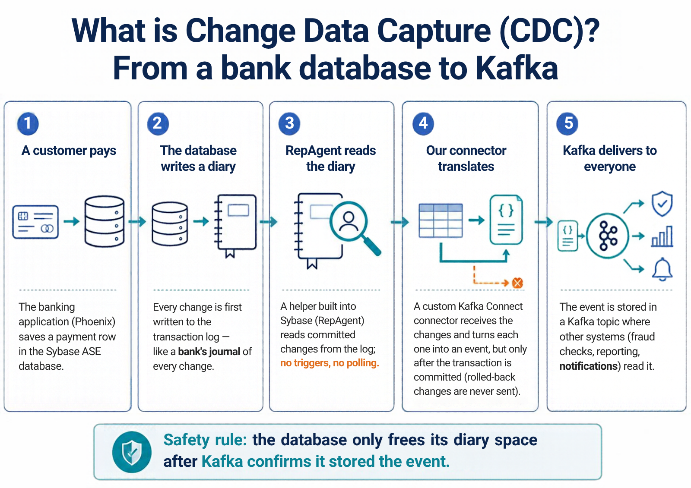

Sybase ASE → Kafka change data capture with a custom RepAgent connector
How a custom Kafka Connect source connector receives every committed change of a Sybase ASE database by impersonating an SAP Replication Server, why it is built that way, how to rebuild and test it from an empty folder, and what must still happen before a bank can run it in production.
1.Project overview and final deliverables
The Phoenix core-banking system stores its data in SAP Adaptive Server Enterprise (ASE, formerly Sybase ASE). Other systems need every insert, update and delete as an event stream in Apache Kafka, without database triggers and without polling tables. This project delivers that through log-based change data capture (CDC): ASE's built-in Replication Agent (RepAgent) reads the transaction log and pushes committed changes to a listener; the listener is a custom Kafka Connect connector written in Java that speaks the same network protocol as SAP Replication Server.
What exists in the workspace
| Deliverable | Location | State |
|---|---|---|
| Connector source (19 classes) and 4 test classes | sybase-cdc-connector/src | built, tested |
| Connector JAR (plugin) | plugins/sybase-cdc/sybase-cdc-connector-0.1.0.jar · SHA-256 7e1e5bc2…3f61b | deployed locally |
| Local environment | docker-compose.yml, connect-distributed.properties, sybase/ | running |
| Connector configuration | connectors/sybase-cdc-phoenix.json | registered locally |
| Custom Kafka Connect image | deploy/docker/Dockerfile.connect → sybase-cdc-connect:0.1.0 | built, plugin discovery verified |
Image archive (docker save) | deliverables/images/sybase-cdc-connect-0.1.0.tar.gz (196 MB) + .sha256 | created, checksum verified |
| OpenShift manifests (IBM Event Streams) | deploy/openshift/*.yaml | YAML-valid, never applied |
| Test evidence | docs/evidence/, captures/ | indexed in Evidence index |
| Diagrams (17) | docs/diagrams/src/*.drawio (editable) + …/svg/*.svg | generated and reviewed |
| Line-by-line source reference | docs/source/*.html (23 pages) | coverage checked |
| Earlier one-page test report | report/index.html | superseded by this handbook |
2.How to use this documentation
The chapters follow a learning path: concepts first, then the system, then the code, then operations. Experienced readers can jump straight to the local walkthrough or the OpenShift guide. Every technical term is defined in the glossary, and the first time a term appears it is explained in parentheses.
Conventions
- HOST a command you type on your own computer (Git Bash on Windows, or a Linux/macOS terminal).
- CONTAINER a command that runs inside a container, usually started with
docker exec. - SQL statements sent to ASE through
isql. In ASE a batch ends with a line containing onlygo. - VERIFIED means there is evidence in this workspace; PROPOSED means a recommendation that has not been executed; NOT RUN and INCONCLUSIVE are used in the test report.
- Passwords in examples are placeholders such as
${LTL_PASSWORD}. The only literal passwords shown are the throw-away values of the local Docker test database (the image's public defaultsapassword and the local RepAgent test credential); never reuse them.
Sources of truth used to write this handbook
- The files in this workspace (code, scripts, configuration), quoted verbatim.
- Runtime evidence captured from the running containers (
docs/evidence/01…13). - The recorded engineering session that built the connector. There is no Git repository, so the development history comes from that record and from logs that survived (ASE errorlog, Connect log, capture files). Each historical claim names its evidence.
- Authoritative external documentation, listed in External references.
3.Beginner's introduction to the technologies
Before any detail, here is the whole idea in plain language. A bank's application writes payments into a database. Other teams (fraud detection, reporting, notifications) want to react to every payment as it happens. Asking the database "what changed?" every few seconds (polling) is slow and expensive; adding triggers to tables slows down the banking application. Instead, we read the database's own diary of changes, the transaction log, and turn every committed change into a message in Kafka, a system built to deliver streams of messages to many readers.

docs/assets/img/canva-cdc-explained.png).
Simplification to be aware of: step 3 says RepAgent "reads committed changes". In reality RepAgent forwards every logged change of replicated tables, including transactions that are still open or later rolled back; the connector holds them and publishes only after COMMIT (step 4). The safety rule at the bottom is exactly what the code implements (Figure 17).
The pieces, one sentence each
| Piece | What it is | Role here | Chapter |
|---|---|---|---|
| SAP ASE | A relational database server (Sybase heritage). | Stores Phoenix data; owns the transaction log. | ASE |
| Transaction log | An append-only record of every change, written before the change is considered durable. | The source of truth the CDC reads. | RepAgent |
| RepAgent | A thread inside ASE that reads the log and sends it to a Replication Server in a language called LTL. | Pushes changes to our connector. | RepAgent |
| LTL | Log Transfer Language: text-like commands such as distribute … applied … rs_insert. | What the connector parses. | LTL 760 |
| TDS | Tabular Data Stream: Sybase's binary client/server protocol. | The envelope LTL travels in. | TDS |
| Kafka | A distributed, durable log of messages (topics) that many consumers can read independently. | Destination of the change events. | Kafka |
| Kafka Connect | A framework that runs plugins (connectors) to move data in or out of Kafka. | Hosts our connector, stores its position. | Connect |
| Docker | Runs programs in isolated containers from images. | The whole local test environment. | Docker |
| Java + Maven | The language of the connector and its build tool. | Source code and JAR. | Java, Build |
| OpenShift | Red Hat's Kubernetes platform for running containers in production. | Target platform (IBM Cloud Pak for Integration). | OpenShift |
4.Final architecture and end-to-end data flow
The key design decision: the connector pretends to be an SAP Replication Server. RepAgent, which lives inside ASE, can only send its stream to "a Replication Server" named in the ASE interfaces file (a text file mapping server names to host:port). We register a server called CDC_RS whose address is the connector. RepAgent connects, logs in over TDS, and streams LTL. SAP Replication Server itself is not installed and not needed; no table triggers exist; no SQL polling happens. The connector never logs in to ASE at all: data only flows from RepAgent to the connector.

Purpose: shows every runtime component, where it runs, and the two loops that matter: data (solid) and acknowledgement (dashed).
Legend: blue = connector code; orange = vendor components (ASE, RepAgent, the application); green = data stores (log, topics); yellow = decision/control state; solid arrow = data; dashed brown = acknowledgement/control.
How to read it: (1) the application writes; (2) ASE logs; (3) RepAgent scans the log and pushes TDS+LTL to port 11752; (4) LtlServer/LtlSession receive it, LtlParser decodes it, TransactionBuffer holds rows until COMMIT; (5) the task's poll() turns them into records that ChangeEventMapper shapes, and the producer writes them to the topic; (6) each broker acknowledgement reaches AckTracker; (7) the next get truncation from RepAgent receives the acknowledged position, and RepAgent moves the database's secondary truncation point, which allows ASE to reuse that log space.
Responsibilities: ASE guarantees the log; RepAgent guarantees ordered delivery from the log and re-delivery after reconnects; the connector guarantees that nothing is acknowledged before Kafka has it; Kafka guarantees durability once acknowledged.
Files: SybaseCdcSourceTask.java, LtlSession.java, docker-compose.yml, sybase/02_repagent.sql.
Does not show: the Kafka Connect REST API, worker internals, or the production network (see Figure 11).

Purpose: the same journey as a numbered sequence, for readers who prefer steps to boxes.
Key point: nothing reaches Kafka before step 7 (COMMIT). A ROLLBACK ends the path at the red box: rows are discarded and nothing is published (test scenario 2 verified 0 events).
Latency budget measured locally: steps 1–4 are bounded by RepAgent's scan speed (1M rows: ≈ 8,600 rows/s average, ≈ 12,900 rows/s in the best 11-second sample, on this Windows PC); steps 5–11 kept pace with it. See test 6.
Does not show: batching (many commands per TDS message, many records per poll()).

Purpose: connects the database concept (log records) to the wire format (LTL commands) and to the code that handles each.
Read across each row: the log record ASE writes, the distribute command RepAgent sends for it (real syntax, abbreviated), and what TransactionBuffer does. Note the update row: the after image carries only changed columns; LtlParser rebuilds the full row.
Does not show: system transactions (e.g. rs_logexec, _dmpxact) that RepAgent also sends; they are committed transactions with no rows and only move the position.

Purpose: answers "do we need SAP Replication Server?" No. RepAgent's peer is replaced by the connector.
What changes: the stable queues, replication definitions, subscriptions and SQL application of Replication Server disappear; the connector writes JSON events to Kafka instead. What stays: RepAgent, its configuration procedures, the secondary truncation point and the interfaces-file entry.
Precedent: Qlik Replicate's "RepAgent CDC" mode (Preview) uses the same pattern: RepAgent is pointed at the product's own listener through an interfaces entry, with net password encryption set to false because encrypted passwords are not supported (Qlik documentation).
Implication: SAP does not document LTL beyond version 700 and does not support third-party Replication Server emulation. The protocol knowledge in this handbook comes from captures; see the risks in production readiness.
5.Forensic project inventory
Every component the solution depends on, with its verified version and the evidence file that proves it. Evidence files live in docs/evidence/ and were captured from the running environment on 2026-10-20 (UTC).
| Component | Path / reference | Version (verified) | Purpose | Inputs → outputs | Runs in | Evidence | Known limitations |
|---|---|---|---|---|---|---|---|
| Connector JAR | plugins/sybase-cdc/sybase-cdc-connector-0.1.0.jar | 0.1.0, SHA-256 7e1e5bc225e0…f61b, 65,857 bytes, 51 entries | Kafka Connect source plugin | RepAgent LTL → Kafka records | cdc-connect | 06-connect-rest.txt, 10-custom-image-plugin-discovery.txt | See assessment |
| Connector source | sybase-cdc-connector/src/main | 19 classes, 1,845 lines (tests: 4 classes, 207 lines) | Implementation | — | build | source reference | No Git history |
| Unit tests + fixtures | …/src/test, …/src/test/resources/ltl760/*.bin | 4 classes, 11 tests, 8 real captures | Regression of protocol decoding | bytes → assertions | build | tests/unit-tests.txt | No integration test in Maven (end-to-end tests were manual scripts) |
| Build definition | sybase-cdc-connector/pom.xml | Java release 17; connect-api 3.8.0 (provided); slf4j-api 1.7.36 (provided); JUnit 5.10.2; shade 3.5.3; surefire 3.2.5 | Compile, test, package | sources → JAR | maven container | 05-maven.txt | maven-compiler/jar plugin versions not pinned |
| Build scripts | build.sh, deploy-local.sh | — | Build in Docker; redeploy locally | — | host (Git Bash) | this chapter | Use pwd -W (Git Bash on Windows) |
| ASE server | image datagrip/sybase:latest @ sha256:72f1e825…7d867f | ASE 16.0 SP02 PL02 EBF 25320 (built 2015-11-21), Developer Edition (DE, licence type DT), server MYSYBASE, charset iso_1, sort order bin_iso_1, 16 KB logical pages | Source database | SQL → log | cdc-sybase | 02-images.txt, 08-ase-facts.txt | Needs kernel workaround (history); not SP04 |
| ASE startup + init | sybase/start.sh, 00_database.sql, 01_setup.sql, 02_repagent.sql, 03_log_threshold.sql | — | Start ASE, create DB, table, RepAgent config, alert | — | cdc-sybase | container log | Some settings were applied manually (see manual steps) |
| Kernel shim | sybase/rie_shim.c → rie_shim.so | built with gcc:13 @ sha256:b5903657… | Lets the 2015 ASE binary run on Linux ≥ 5.8 | — | cdc-sybase (LD_PRELOAD) | logs/ase-crash-snap-validate.txt | Needs seccomp=unconfined; local only |
| Interfaces entry | CDC_RS → connect:11752 in /opt/sybase/interfaces | — | Where RepAgent connects | — | cdc-sybase | 09-ase-interfaces.txt | Appended by start.sh |
| Kafka broker | image apache/kafka:3.8.0 @ sha256:c89f315c…57069 | Kafka 3.8.0 (Scala 2.13), KRaft combined broker+controller, single node, Alpine Linux, Temurin JRE 21.0.4 | Event storage | records | cdc-kafka | 02-images.txt, 04-kafka-java.txt | Replication factor 1 (local only) |
| Kafka Connect worker | same image, connect-distributed.sh + connect-distributed.properties | Connect 3.8.0, distributed mode, group sybase-cdc-connect | Runs the connector | config → task | cdc-connect | 06-connect-rest.txt | One worker |
| Connector instance | connectors/sybase-cdc-phoenix.json | — | Registered configuration | REST POST | cdc-connect | 06-connect-rest.txt | Password in plain text in REST output |
| Kafka UI | provectuslabs/kafka-ui:latest @ sha256:8f2ff02d…31818 | image created 2024-04-10; application version unknown (find it on the UI's "About" page) | Inspection only | — | cdc-kafka-ui | 02-images.txt | Not needed by the pipeline |
| Build image | maven:3.9-eclipse-temurin-17 @ sha256:1a352420… | Maven 3.9.16, Temurin JDK 17.0.20.1 | Build without local JDK | — | temporary container | 05-maven.txt | Tag moves; pin the digest in CI |
| Custom Connect image | deploy/docker/Dockerfile.connect → sybase-cdc-connect:0.1.0 (sha256:ecc81737…) | apache/kafka:3.8.0 + JAR; runs as appuser (uid 1000) | Ship the connector as an image | — | registry / OpenShift | 10-custom-image-plugin-discovery.txt | Not used by docker-compose (bind mount used locally) |
| Image archive | deliverables/images/sybase-cdc-connect-0.1.0.tar.gz | 205,639,097 bytes, SHA-256 e46c77a4…fe3e8b | Offline transfer of the image | — | file | .sha256 file | Contains Apache Kafka (Apache-2.0); does not contain ASE |
| OpenShift manifests | deploy/openshift/0[1-5]-*.yaml | eventstreams.ibm.com/v1beta2, core v1, networking.k8s.io/v1 | Production deployment template | — | OpenShift | 11-openshift-yaml-syntax.txt | Never applied to a cluster |
| Helper scripts | captures/*.sh, captures/*.sql | — | Tests, monitoring, analysis | — | host | test chapter | Hard-coded local paths/credentials |
| Docs tooling | docs-src/, images rlespinasse/drawio-export:v4.38.0, mikefarah/yq:4.44.3, Node 24.6.0 | — | Build this handbook | — | host / temporary containers | docs/PROGRESS.md | Not needed at runtime |
6.Complete version and compatibility matrix
Final working environment (verified)
| Layer | Local (verified) | Production (reported / proposed) | How to read the version yourself |
|---|---|---|---|
| Host OS | Windows 11 Home 10.0.22631, Docker Desktop with WSL2 kernel 6.18.33.2 | n/a | docker info, uname -r in a container |
| Docker engine / Compose | 29.6.1 / v5.3.0 | n/a (OpenShift uses CRI-O) | docker version, docker compose version |
| SAP ASE | 16.0 SP02 PL02 EBF 25320, Developer Edition | 16.0 SP04 PL07 HF1 EBF 31179, SLES 12.4 (reported by the bank) | select @@version, sp_lmconfig |
| LTL version | 760 (proposed by RepAgent, accepted) | unknown: capture connect source on SP04 | connector log line "connect source … proposed LTL …" |
| Kafka broker | 3.8.0 KRaft | Event Streams (version unknown) or IBM Confluent Platform | kafka-broker-api-versions.sh, operator CR status |
| Kafka Connect | 3.8.0 | Version shipped by the operator (unknown) | GET / on the Connect REST API |
| Java runtime (Connect) | Temurin 21.0.4 | Operator image JRE (unknown; must be ≥ 17) | java -version in the pod |
| Java compile target | release 17 (class file major version 61, checked on Oqid.class) | same | javap -v on a class: "major version: 61" |
| connect-api (compile) | 3.8.0 | must be ≤ runtime Connect version | pom.xml |
| Maven / JDK (build) | 3.9.16 / Temurin 17.0.20.1 | CI image (pin by digest) | mvn -v |
| OpenShift / Kubernetes | not used | unknown (Cloud Pak for Integration) | oc version |
Compatibility matrix
| Combination | Status | Basis |
|---|---|---|
| ASE 16.0 SP02 PL02 + LTL 760 + Connect 3.8.0 + Java 21 | verified | All tests in this handbook |
| Connector JAR on Connect 3.x (≥ 3.0) with Java 17+ | plausible, untested | Only stable APIs are used (SourceConnector, SourceTask, two-argument commitRecord since 2.4). The offset-safety argument relies on Connect committing only an acknowledged prefix of records (behaviour since 3.0). |
| Connector on Java 11 or older | incompatible | Compiled for release 17; uses records, switch expressions, HexFormat. |
| ASE 16.0 SP04 PL07 HF1 (production) | unknown, must be tested | LTL encoding learned on SP02 only. SP04 may propose a different LTL version or add markers. Follow the migration procedure. |
| ASE 15.x (LTL < 760) | refused by design | The task rejects LTL < 760. |
| IBM Event Streams KafkaConnect (eventstreams.ibm.com/v1beta2) | documented by IBM, untested here | IBM documents custom connectors via spec.build.plugins or a custom image. |
Confluent for Kubernetes Connect CR | documented by Confluent, untested here | Plugins via spec.build.type: onDemand or a custom image; schema varies between CFK versions. |
| Running the ASE container with Docker's default seccomp profile on kernel ≥ 5.8 | fails | Shim cannot set READ_IMPLIES_EXEC; ASE crashes at boot. |
7.Development history and lessons learned
The connector did not work the first time. This chapter reconstructs, in order, what was tried, what failed, how each failure was diagnosed, and what fixed it. Evidence basis: there is no Git repository. The history comes from (a) the recorded engineering session, (b) the ASE errorlog, which survives in the container (docs/evidence/logs/ase-errorlog-excerpts.txt, 242 lines), (c) the Kafka Connect log and offsets topic, and (d) capture files in captures/. Times are UTC on 2026-10-20 unless stated. Where only the session record supports a statement, it says so.
1. Initial problem and design
Requirement: log-based CDC from ASE (Phoenix core banking) to Kafka; no triggers, no polling, free tools; local Docker first, then OpenShift (Cloud Pak for Integration). Chosen design: let ASE's RepAgent push LTL to a custom Kafka Connect connector that impersonates a Replication Server, buffer per transaction, publish on COMMIT, and acknowledge to RepAgent only after Kafka confirms. This design did not change during the project; everything below is about making it work.
2. Local environment bring-up
| # | Symptom | Root cause | Fix | Evidence |
|---|---|---|---|---|
| 2.1 | docker compose up could not use container names kafka, kafka-ui | Stopped containers with those names from another, unrelated project existed on the machine | Prefixed names with cdc- instead of deleting someone else's containers | session record; docker-compose.yml lines 4, 22, 46, 59 |
| 2.2 | Image's init steps printed ct_connect(): … Net-Lib protocol driver call to connect two endpoints failed | The image's entrypoint waited a fixed 30 s and grepped the log, then ran SQL before ASE accepted logins | Own entrypoint sybase/start.sh that polls with select 1 until ASE answers | session record; start.sh lines 21–25 |
| 2.3 | Kafka on kafka:9092 unreachable from Windows | That hostname exists only inside the Docker network | Second listener PLAINTEXT_HOST://localhost:29092 | docker-compose.yml lines 24–31 |
3. ASE crashed at every boot: SIGSEGV in Snap::Validate
Symptom (errorlog, 18:48:47): Current process (0x30002) infected with signal 11 (SIGSEGV) with stack Snap::Validate() → SnapValidation → dsinit; trap number 0x0e (page fault) with error code 0x15 (instruction fetch on a non-executable page). Evidence: docs/evidence/logs/ase-crash-snap-validate.txt.
Diagnosis. Snap is ASE 16's JIT query compiler: it writes machine code into heap memory and jumps into it. /proc/<pid>/maps showed that memory as rw-p (no execute). The binary has an executable stack (GNU_STACK RWE), which on Linux before 5.8 made the kernel set READ_IMPLIES_EXEC for the process, so all readable memory was also executable. Linux 5.8 stopped doing that for 64-bit processes (upstream commit "x86/elf: Disable automatic READ_IMPLIES_EXEC on 64-bit", ref). The laptop runs kernel 6.18.
Wrong turns. (a) setarch x86_64 -X: ineffective, the flag is cleared again at execve for 64-bit binaries. (b) An LD_PRELOAD library that calls personality(READ_IMPLIES_EXEC) after exec: still ineffective, because Docker's default seccomp profile silently refuses personality() with that argument. A small C test program proved both points: with the default profile the personality stayed 0; with --security-opt seccomp=unconfined it became 0x400000 and new mappings were rwxp.
Fix. sybase/rie_shim.c (LD_PRELOAD, sets the flag in a constructor and keeps it if the program calls personality()) plus security_opt: ["seccomp=unconfined"] for the ASE container only. Verified: ASE boots; all later work ran on it. Lesson: old commercial binaries can break on new kernels; this applies to the local image only, not to the production SLES 12 server.
4. RepAgent login rejected: empty password
Symptom (errorlog 19:23:12): RepAgent(4): Received the following error message from the Replication Server: Msg 4002. Login failed for user 'rs_user'. then This Rep Agent Thread is aborting. The connector's hex dump of the TDS login packet showed the user name at offset 31 but an empty password field and byte 0xa1 at offset 514 (encrypted-login flags).
Root cause: RepAgent's net password encryption option defaults to true; the password is then sent through an RSA challenge/response the connector does not implement. Fix: sp_config_rep_agent phoenix_test, 'net password encryption', 'false' (sybase/02_repagent.sql line 12). Qlik Replicate requires the same setting for its RepAgent mode. Consequence: the password crosses the network in clear text; see security.
5. First LTL: a format no document describes
With login working, RepAgent sent connect source lti "MYSYBASE"."phoenix_test" 760 passthru and then data like distribute 1 ~*620261020 19:07:27:083,4 0x0000…,6 0x0000… begin transaction ~")_dmpxact osid 14. SAP's LTL reference (Replication Server 15.0.1 Design Guide) describes LTL up to version 700 with quoted strings and named tags (@origin_qid=…); version 760 uses numbered tags and length-prefixed values. The first parser, written from the documentation, recognised nothing. Evidence: docs/evidence/ltl/capture-1-first-session.txt.
Method used to learn the format: a discovery tool (LtlProbe) that logs every message; raw message dumps (-Dltl.dump.dir); and test tables designed to produce one value of every type and length (sybase/90…92_*.sql.manual). Each hypothesis was checked against bytes: for example ~"(payment means marker ", length ( = 0x28 − 0x21 = 7; 64 characters switched to ~#"! (two digits); 5,000 to ~9"/) (three digits). The final encoding is in LTL 760 encoding.
6. The 4047 incident: RepAgent aborts, then ASE crashes
Symptom (errorlog 19:24:16, 19:30:24, 19:35:50): RepAgent(4): Fatal error from CT-Lib. (CT-Lib command = usctresults, return status = 4047). followed by terminated abnormally and, in several cases, an ASE crash in ra_free_mempool → ubffreef while the RepAgent thread shut down (docs/evidence/logs/ase-crash-ra-free-mempool.txt). It happened at the second get truncation of each session, about 15 seconds after connecting.
Diagnosis, in the order it happened (session record):
- Hypothesis "RepAgent dislikes an all-zero truncation answer": answering with the highest OQID seen made one session succeed, but the next failed again. Inconclusive; an experiment with a NULL answer was reverted.
- SAP's Design Guide example shows that
connect sourcereturns two result sets (VERSION; Sysversion + UpgradeLocater); the connector sent one. Fixed, kept, but 4047 continued. - Because the crash was in RepAgent's memory cleanup,
MALLOC_ARENA_MAX=1and disabled address randomisation (setarch -R) were added tostart.sh. RepAgent then terminated without crashing ASE once, but a normalsp_stop_rep_agentstill crashed it. These settings are still in place; whether they are needed is unproven. - Breakthrough: 4047 is the numeric value of the CT-Lib constant
CS_CMD_SUCCEED, a result type. RepAgent askedget truncationand the first result it read was a bare DONE, so the replies were out of step: the connector had sent one DONE too many. - Test "send no reply to LTL data": RepAgent stopped and waited, so replies are expected. Disproved.
- A packet-level trace explained it. RepAgent asked for 2,048-byte packets at login, but the connector never confirmed the size, so CT-Lib fell back to 512-byte packets and re-split RepAgent's buffers. The end-of-message flag landed inside the second buffer, so one logical batch arrived as two messages, the connector answered twice, and the extra DONE was later read as the truncation result.
Fix (LtlSession lines 128–135): send ENVCHANGE type 4 (packet size 2048) in the login reply, and answer exactly one DONE per message. Verified: the 3,877-byte batch arrived as one message; every later message started with distribute; mid-stream get truncation succeeded; sp_stop_rep_agent no longer crashed ASE (19:39:51), and the ASE crash in ra_free_mempool never recurred in the remaining hours of testing. Lesson: when emulating a protocol peer, confirm every negotiation the client starts; "the client tolerates it" is not evidence.
7. Defects found by end-to-end testing
| # | Symptom | Root cause | Fix | Verification |
|---|---|---|---|---|
| 7.1 | user was null for application transactions | Begin records use npw ~"#sa (no password) as well as for … - … | Parser accepts npw | probe output: user=sa |
| 7.2 | 100.00 published as "100." | ASE LTL numeric text | Trailing dot removed | LtlValuesTest; test 3 shows "10" |
| 7.3 | After a restart: "last committed OQID: none", 7 duplicate events | The offset partition was built with Map.of(); its iteration order changes per JVM run, and Connect looks offsets up by serialized bytes | TreeMap (SybaseCdcConfig) | Offsets topic shows two key orders; after the fix every restart logged the stored OQID |
| 7.4 | (found by analysis) a crash during a large transaction could lose its remaining rows | Every record carried the transaction's commit OQID as offset, so one acknowledged row could mark the transaction done | Only the last record carries it (poll()) | Test 6b: kill with 53,822 of 200,000 rows in Kafka → all 200,000 delivered |
| 7.5 | RepAgent took up to about 2.5 min to reconnect after a connector restart | RepAgent notices a dead peer only on its next send, then waits retry timeout (60 s default) | retry timeout set to 10 s (manual step) | Reconnect in 1 s in test 4b |
| 7.6 | RepAgent trace file grew to 435 MB during the 1M-row tests | Trace flag 9201 logs every LTL packet | 9201 and 9204 turned off, 9202 kept | 08-ase-facts.txt |
| 7.7 | Identity values jumped from 2 to 500000000000002 | ASE "identity burning set" after unclean shutdowns (the crashes above): expected ASE behaviour, not a CDC bug | None needed; documented for consumers | Kafka records |
Manual steps that the scripts do not perform
These actions were done by hand during the project and must be repeated to reproduce the tested state. They are included in the walkthrough.
sp_start_rep_agent phoenix_testafter the connector is running (later boots start RepAgent automatically becauseauto startbecomestrue).sp_config_rep_agent phoenix_test, 'retry timeout', '10'(takes effect at the next RepAgent start).- Optional troubleshooting traces:
'trace log file', '/tmp/repagent_trace.log'and'traceon', '9202'. 9201/9204 were on during discovery and turned off afterwards. - Connector registration:
curl -X POST … connectors/sybase-cdc-phoenix.json. - Test data helpers: table
nums(captures/t6-prepare.sql) and the discovery tables fromsybase/9x_*.sql.manual.
Discrepancies found while documenting: sybase/02_repagent.sql (line 11) and LtlLexer.java (line 9) refer to a GUIDE.md that was never written; this handbook replaces it. start.sh line 12 still runs setarch x86_64 -R (no address randomisation); the -X variant from the first attempt is gone.
8.Linux and command-line prerequisites
Everything in this project is driven from a terminal. On Windows the commands were run in Git Bash (a Bash shell shipped with Git for Windows); on Linux or macOS use the normal terminal. This chapter explains the few ideas you need to read every command in the handbook.
Files, directories and paths
A path names a file. An absolute path starts at the root (/opt/sybase/interfaces inside a Linux container, C:/Users/you/project on Windows); a relative path starts at the current directory (sybase/start.sh means "the file start.sh in the folder sybase below where I am"). pwd prints the current directory, cd changes it, ls -la lists files with sizes and permissions.
Windows detail used in this project: Git Bash shows paths as /c/Users/..., but Docker Desktop needs C:/Users/... for bind mounts. pwd -W prints the Windows form, which is why build.sh uses it. The variable MSYS_NO_PATHCONV=1 stops Git Bash from rewriting arguments that look like paths (/opt/...) before they reach docker exec; without it, a container path like /tmp/x is silently turned into a Windows path. It must not be exported globally when running Windows programs such as node with /c/... paths (seen while building these docs).
Permissions and users
Linux files have an owner and read/write/execute bits for owner, group and others (-rwxr-xr-x). Scripts must be executable (chmod +x build.sh) or run with an interpreter (bash build.sh). Containers also run as a user: the Kafka image runs as appuser (uid 1000), so files it reads must be readable by that user; OpenShift goes further and runs containers with a random uid.
Environment variables
Named values a process inherits, e.g. SYBASE=/opt/sybase. VAR=value command sets one only for that command (used in start.sh: MALLOC_ARENA_MAX=1 LD_PRELOAD=… sh RUN_MYSYBASE); export VAR=value sets it for the rest of the session; ${VAR:-default} substitutes a default when empty. Docker passes them with environment: in Compose; OpenShift with ConfigMaps and Secrets.
Processes, services, ports and DNS
- A process is a running program (
ps aux,pgrep -f dataserver). ASE's process is calleddataserver; Kafka and Connect arejavaprocesses. - A port is a numbered door on a network address. A server listens on a port; a client connects to host:port. Ports here: ASE 5000, Kafka 9092 (inside Docker) and 29092 (from the host), Connect REST 8083, the connector's LTL listener 11752, Kafka UI 8080.
- DNS / hostnames map names to IP addresses. Inside the Docker network the service names (
kafka,connect,sybase) resolve to container IPs; on your PC onlylocalhostplus published ports work.
Commands, arguments, pipes, logs and exit codes
A command is a program name plus arguments: in docker logs cdc-connect --since 5m, docker is the program, logs a sub-command, cdc-connect an argument and --since 5m an option. A pipe | feeds one command's output into the next: docker logs cdc-connect 2>&1 | grep "RepAgent connected" (2>&1 merges error output, where Java logs often go). Every command ends with an exit code: 0 means success, anything else failure; echo $? shows it, and set -euo pipefail in scripts stops at the first failure. Many commands in this handbook end with a verification line whose output you should compare with the "Expected" block.
Host command or container command?
Each container has its own file system, processes and tools. isql exists only in the ASE container; kafka-topics.sh only in the Kafka containers; mvn only in the Maven build container. To run something inside a container:
docker exec cdc-sybase bash -c 'source /opt/sybase/SYBASE.sh; isql -Usa -P"$SA_PW" -SMYSYBASE -w250'
docker exec -it cdc-connect bash # interactive shell; type exit to leave
docker exec cdc-connect sh -c 'ps aux' # list the processes inside the containerHOST docker exec … is typed on the host; the part in quotes runs CONTAINER inside. source /opt/sybase/SYBASE.sh loads the ASE environment variables (paths to isql, libraries). The helper captures/isql.sh wraps this: printf "select @@version\ngo\n" | captures/isql.sh.
Commands used in this project
| Command | Where | What it does here |
|---|---|---|
docker compose up -d / stop / ps | host | Start (detached), stop, list the four services of docker-compose.yml |
docker logs <c> [--since 5m] | host | Container console output (ASE startup, Connect worker log) |
docker exec <c> <cmd> | host | Run a command in a running container |
docker run --rm … | host | One-off container (Maven build, gcc, drawio export), removed afterwards |
isql -Usa -P… -SMYSYBASE -w250 | ASE container | ASE command-line SQL client; -S server name from the interfaces file, -w output width, -i file run a script |
curl -s localhost:8083/… | host | Call the Kafka Connect REST API (-s silent, -X POST, -H header, --data @file) |
kafka-console-consumer.sh --bootstrap-server kafka:9092 --topic … --from-beginning | Kafka container | Print records of a topic |
kafka-get-offsets.sh --topic … | Kafka container | End offset per partition = number of records written |
sha256sum file | host | Fingerprint of a file (verify the JAR and the image archive) |
grep, awk, sed, od -c | both | Search text, compute columns, edit text, show raw bytes (LTL dumps) |
9.Docker fundamentals and environment setup
Plain definition: Docker runs programs in containers: isolated processes with their own file system, network address and installed software, created from a read-only template called an image. Why it exists: the same image runs identically on every machine, so "works on my laptop" becomes reproducible. Here: four containers (ASE, Kafka, Kafka Connect, Kafka UI) form the whole test environment; one-off containers build the JAR, compile the kernel shim and render diagrams.
Concepts you need
- Container vs virtual machine
- A VM emulates a whole computer with its own kernel; a container shares the host's Linux kernel (on Windows, the WSL2 kernel). That is why the 2015 ASE binary met the 2026 kernel and crashed (history 3).
- Image vs container
- Image = template (layers of files + metadata). Container = a running (or stopped) instance with a writable layer on top. Deleting the container deletes that layer, including the ASE database here.
- Tag vs digest
apache/kafka:3.8.0is a tag (a movable name);@sha256:c89f…is a digest (an immutable content hash).latesttags (used for the ASE and UI images) can change at any time; the digests that were tested are in the inventory.- Registry
- Server storing images (Docker Hub here; an approved internal registry in a bank).
- Dockerfile, build context, layers, cache
- A Dockerfile lists build steps; each step creates a cached layer; the build context is the folder sent to the builder (here the project root, so
plugins/is visible). - Volumes and bind mounts
- A bind mount maps a host folder into a container (
./plugins:/opt/connectors); a named volume is storage managed by Docker (cdc-m2-cachekeeps the Maven download cache between builds). - Networks and published ports
- Compose creates one bridge network; containers reach each other by service name.
ports: ["8083:8083"]publishes a container port on the host. - Entrypoint, command, health check, restart policy
- What runs at start, its arguments, how Docker decides a container is healthy, and whether Docker restarts it.

Purpose: which container talks to which, by which name and port. Direction: RepAgent (in cdc-sybase) connects to connect:11752; Connect produces to kafka:9092; Kafka UI reads Kafka and the Connect REST API; you use the published localhost ports.
Persistence warning: no named volume holds ASE data. docker compose stop/start/restart keeps the database; docker compose down (or deleting cdc-sybase) erases it, and the next start re-runs the init scripts. Kafka data is also inside its container.
Network name is derived from the project folder (<folder>_default), so it changes if the folder is renamed. Files: docker-compose.yml.
docker-compose.yml, explained line by line
| Lines | Content | Meaning and reason |
|---|---|---|
| 1–3 | services: sybase: image: datagrip/sybase:latest | A freely downloadable image containing SAP ASE 16.0 SP02 PL02 Developer Edition (license type DT, for development and testing). Image created 2019; ASE build from 2015. Tested digest sha256:72f1e825…. |
| 4–5 | container_name: cdc-sybase, hostname: sybase | Fixed names; cdc- prefix avoids clashing with unrelated containers (history 2.1). The hostname is what ASE prints in its errorlog. |
| 6 | ports: ["5000:5000"] | ASE listens on 5000 (interfaces entry MYSYBASE); published for host SQL tools. |
| 7–10 | SYBASE_USER/PASSWORD/DB | Read by the image's original entrypoint, which is replaced; start.sh only uses SYBASE_PASSWORD (the sa password, public image default). Kept for compatibility. |
| 11–12 | ./sybase:/scripts:ro | Mounts startup script, shim and SQL scripts read-only. |
| 13 | entrypoint: ["/bin/bash", "/scripts/start.sh"] | Replaces the image's entrypoint (history 2.2). |
| 14 | stop_grace_period: 30s | Gives ASE time for a clean shutdown with nowait on docker stop (default 10 s). |
| 15 | restart: unless-stopped | If ASE dies, start.sh exits and Docker restarts the container; used to simulate and recover from crashes (test 5). |
| 16–18 | security_opt: ["seccomp=unconfined"] | Disables Docker's system-call filter for this one container so the shim can call personality(READ_IMPLIES_EXEC). Local test database only: it weakens isolation. |
| 20–24 | kafka: image: apache/kafka:3.8.0, ports 29092 | Official Apache Kafka image. 29092 is the host listener. |
| 26–27 | KAFKA_NODE_ID: 1, KAFKA_PROCESS_ROLES: broker,controller | KRaft mode (no ZooKeeper): one process is both the broker and the metadata controller. |
| 28–31 | listeners, advertised listeners, protocol map, inter-broker listener | Three listeners: PLAINTEXT on 9092 advertised as kafka:9092 (containers), CONTROLLER on 9093 (KRaft internal), PLAINTEXT_HOST on 29092 advertised as localhost:29092 (your PC). Clients connect, then use the advertised address the broker returns, which must be reachable from where they are. |
| 32–33 | controller listener name, quorum voters | Node 1 at kafka:9093 is the only controller voter. |
| 34–36 | replication factor 1, min ISR 1 | Required with a single broker (defaults expect 3). Production uses 3. |
| 37 | KAFKA_GROUP_INITIAL_REBALANCE_DELAY_MS: 0 | Faster consumer-group start in tests. |
| 38–42 | healthcheck | Healthy when kafka-broker-api-versions.sh can reach the broker; Connect waits for it. |
| 44–47 | connect: image: apache/kafka:3.8.0, hostname connect | Same image, different program. The hostname connect is what the ASE interfaces entry CDC_RS points at. |
| 48–50 | depends_on | Start after Kafka is healthy and ASE has started (started ≠ ready; RepAgent retries anyway). |
| 51 | ports: ["8083:8083", "11752:11752"] | REST API and the LTL listener (published only for host-side experiments; RepAgent uses the internal network). |
| 52–54 | bind mounts | ./plugins → /opt/connectors (the plugin.path); the worker properties file, read-only. |
| 55 | command: …connect-distributed.sh … | Start Kafka Connect in distributed mode with that file. |
| 57–66 | kafka-ui | Optional web UI on http://localhost:8080 showing topics, messages and connectors. Not part of the data path. |
connect-distributed.properties
The file exactly as used (in .properties files a # starts a comment only at the beginning of a line; never append comments after a value):
bootstrap.servers=kafka:9092
group.id=sybase-cdc-connect
key.converter=org.apache.kafka.connect.json.JsonConverter
value.converter=org.apache.kafka.connect.json.JsonConverter
config.storage.topic=_connect-configs
offset.storage.topic=_connect-offsets
status.storage.topic=_connect-status
config.storage.replication.factor=1
offset.storage.replication.factor=1
status.storage.replication.factor=1
listeners=http://0.0.0.0:8083
rest.advertised.host.name=connect
rest.advertised.port=8083
plugin.path=/opt/connectors
# Commit source offsets every 5 s (default 60 s): fewer re-sent events after a crash
offset.flush.interval.ms=5000| Property | Meaning |
|---|---|
bootstrap.servers | Where the worker finds Kafka (internal listener). |
group.id | Workers with the same id form one Connect cluster and share connectors. |
key.converter, value.converter | Default serialization; the connector configuration overrides schemas.enable=false for its own records. |
config/offset/status.storage.topic | Kafka topics where the worker stores connector configurations, source offsets (the connector's ASE log position) and states. |
*.replication.factor=1 | One broker locally; use 3 in production. |
listeners, rest.advertised.* | REST API address and the name other workers use to reach this one. |
plugin.path | Folder scanned for plugins; each sub-folder gets an isolated class loader. |
offset.flush.interval.ms=5000 | Commit offsets every 5 s instead of 60 s, which shrinks the window of re-sent events after a crash. Added before test 6. |
sybase/start.sh, explained
| Lines | What and why |
|---|---|
| 5–8 | Load the ASE environment; build the isql command line (-Usa user, -P password, -SMYSYBASE server, -w300 width). |
| 10–12 | Start the server script RUN_MYSYBASE in the background with three additions: LD_PRELOAD=/scripts/rie_shim.so (enables READ_IMPLIES_EXEC, required), MALLOC_ARENA_MAX=1 and setarch x86_64 -R (no address randomisation; added during the 4047 investigation, not proven necessary, kept because the tested state includes them). |
| 14–19 | Append the CDC_RS entry (master/query lines: protocol tcp, host connect, port 11752) to the interfaces file, once. The tab-indented two-line format is the Sybase interfaces syntax on Unix. |
| 21–25 | Wait until select 1 succeeds; if dataserver died, print the errorlog tail and exit (Docker restarts the container). |
| 28–32 | First boot only (marker file in the data folder): run /scripts/*.sql in name order (00, 01, 02, 03). *.sql.manual files are not run automatically. |
| 35 | On docker stop (SIGTERM) shut ASE down cleanly. |
| 36–39 | Stay alive while dataserver runs; exit 1 when it dies so the restart policy applies. |
sybase/rie_shim.c, explained
A 21-line C library loaded into ASE with LD_PRELOAD (a Linux feature that loads a library before all others). Its constructor (a function the loader runs automatically) reads the process personality and adds READ_IMPLIES_EXEC; its own personality() function makes sure a later call by ASE cannot remove the flag. It uses the raw syscall(SYS_personality, …) to avoid calling itself. It only uses symbols from GLIBC 2.2.5, so a library built with gcc:13 loads in the CentOS 7 based ASE image. Build command (run once; the .so is in the workspace):
docker run --rm -v "$(pwd -W)/sybase:/src" -w /src gcc:13 \
sh -c 'gcc -O2 -shared -fPIC -o rie_shim.so rie_shim.c && objdump -T rie_shim.so | grep -i glibc'deploy/docker/Dockerfile.connect, explained
The instructions of the file (its comment lines are omitted here; in Dockerfiles, too, a # comment must be on its own line):
FROM apache/kafka:3.8.0
COPY plugins/sybase-cdc/sybase-cdc-connector-0.1.0.jar /opt/connectors/sybase-cdc/
COPY connect-distributed.properties /opt/kafka/config/connect-distributed.properties
EXPOSE 8083 11752
CMD ["/opt/kafka/bin/connect-distributed.sh", "/opt/kafka/config/connect-distributed.properties"]FROM: base image, the same runtime as the tested worker.- First
COPY: the plugin goes into its own folder under the plugin path. - Second
COPY: the worker configuration (for local use; on OpenShift the operator generates its own). EXPOSE: documents the ports; it does not publish them.CMD: start Connect in distributed mode. The base image's user (appuser) is kept.
Build and verify (both executed):
docker build -f deploy/docker/Dockerfile.connect -t sybase-cdc-connect:0.1.0 .
docker run --rm --entrypoint sh sybase-cdc-connect:0.1.0 -c 'id; sha256sum /opt/connectors/sybase-cdc/*.jar'uid=1000(appuser) gid=1000(appuser) groups=1000(appuser)
7e1e5bc225e035a79c925612c22ca2fb3cc34172e1c9a8a301566f0726b3f61b /opt/connectors/sybase-cdc/sybase-cdc-connector-0.1.0.jarPlugin discovery was verified by starting the image in standalone mode (so it could not join the running cluster) and calling GET /connector-plugins; evidence docs/evidence/10-custom-image-plugin-discovery.txt. For IBM Event Streams use IBM's base image instead (OpenShift chapter).
Exporting images: save vs export
docker save writes an image (all layers, tags and metadata) to a tar file that docker load restores exactly. docker export writes a container's flattened file system without history, entrypoint or environment, so it is not a faithful copy of an image. The connector image was saved and checksummed:
docker save sybase-cdc-connect:0.1.0 | gzip -6 > deliverables/images/sybase-cdc-connect-0.1.0.tar.gz
sha256sum sybase-cdc-connect-0.1.0.tar.gz > sybase-cdc-connect-0.1.0.tar.gz.sha256
# restore elsewhere:
sha256sum -c sybase-cdc-connect-0.1.0.tar.gz.sha256 && gunzip -c sybase-cdc-connect-0.1.0.tar.gz | docker loadNot archived: the ASE image (3.3 GB, SAP Developer Edition licence: obtain it yourself with docker pull datagrip/sybase@sha256:72f1e825d326f0c2ee9a10ea33e26e12aea6b6ff8a815d87abfb96f7e25d867f and accept SAP's terms; do not redistribute it) and the public Apache Kafka, Kafka UI and Maven images (pull them by the digests in the inventory).
10.Sybase ASE fundamentals and database setup
Plain definition: SAP Adaptive Server Enterprise (ASE) is a relational database server: one running server process (here dataserver, named MYSYBASE) hosts several databases (master, phoenix_test…), each containing tables, procedures and users. Clients talk to it with SQL over the TDS protocol (isql, JDBC, the Phoenix application). Here: ASE is the source of all changes; the connector never logs in to it.
Server, database, objects
- Server: the
dataserverprocess and its configuration (sp_configure), listening on port 5000. Its name (@@servername=MYSYBASE) is what RepAgent reports to the connector. - Devices: files ASE stores data in (
disk init). This project createdphoenix_data(1 GB) andphoenix_log(512 MB). - Database: a set of objects with its own transaction log.
phoenix_teststores data onphoenix_dataand its log onphoenix_log, so log growth can be measured on its own. - Objects: tables, indexes, procedures, owned by a database user (usually
dbo, the database owner). - Transaction: a group of changes that becomes visible and durable together at
commit, or disappears atrollback. Withoutbegin tran, each statement is its own transaction (ASE's default "unchained" mode). Oneinsert … selectof 10,000 rows is therefore one transaction (verified in test 6: 100 statements → 100 transaction ids × 10,000 rows).
Logins, users and roles
ASE separates identities on two levels:
- Login (server level)
- An account that can connect to the server, stored in
master..syslogins(create login … with password …). Example:sa. - User (database level)
- A login mapped into one database (
sp_adduser <login>inside that database). Permissions on tables are granted to users. - Role (server level)
- A bundle of system privileges granted to logins:
sa_role(administrator),sso_role(security officer),replication_role(replication administration).
replication_role, mapped as a user in the database, could run sp_help_rep_agent, sp_config_rep_agent and query sp_setreptable. A login with only table permissions was refused with "Only the System Administrator (SA), the Database Owner (DBO) or a user with replication_role authorization can execute…". Not tested: sp_start_rep_agent/sp_stop_rep_agent, sp_setreptable … true and sp_configure 'enable rep agent threads' (server-wide, assume sa_role). Re-test on SP04.Which identities this solution needs:
| Identity | Where it lives | Used by | Needs |
|---|---|---|---|
DBA login with replication_role (+ sa_role for server settings) | ASE | A human, once, to configure RepAgent | See callout |
RepAgent credential (rs_user locally) | Not an ASE login. Stored in RepAgent's config (sp_config_rep_agent … 'enable', 'CDC_RS', user, password) and in the connector | RepAgent authenticating to the connector | Same value on both sides |
Maintenance user (cdc_maint) | A name returned by the connector | RepAgent, to filter that login's transactions | Must not be a login that runs business transactions |
| Connector's own ASE login | — | — | None. The connector never connects to ASE. |
Example of an application-style login (executed during the privilege test, then removed):
use master
go
create login cdc_app_test with password '<password>' default database phoenix_test
go
use phoenix_test
go
sp_adduser cdc_app_test
go
grant select, insert, update, delete on payment to cdc_app_test
goConnecting and checking the version
printf "select @@version\ngo\nselect @@servername\ngo\nsp_lmconfig\ngo\n" | captures/isql.shExpected (local): Adaptive Server Enterprise/16.0 SP02 PL02/EBF 25320 SMP/P/x86_64/Enterprise Linux/…, MYSYBASE, and edition DE, license type null / property LT DT (Developer Edition, development/test licence). Full output: docs/evidence/08-ase-facts.txt.
The initialisation scripts, line by line
sybase/00_database.sql
| 1–2 | use master / go: devices and databases are created from master. go sends the batch. |
| 3–6 | disk init creates two device files: 1 GB for data, 512 MB for the log. |
| 7 | create database phoenix_test on phoenix_data = '1G' log on phoenix_log = '512M': data and log on separate devices. A separate log device is what makes "free log pages" a meaningful metric for the CDC backlog. |
| 9–12 | select into (allows minimally logged select into/bcp in this test DB) and ddl in tran (allows create table inside transactions). Test conveniences; check the production database's own options. |
| 13–14 | trunc log on chkpt: ASE truncates the log at each checkpoint, but never beyond the RepAgent secondary truncation point, so un-replicated records stay (test 7). Production databases normally keep this off and rely on dump transaction for point-in-time recovery; RepAgent's truncation point also holds dump tran back. Do not change production backup settings for CDC. |
sybase/01_setup.sql
| 2 | sp_configure 'enable rep agent threads', 1: server-wide switch allowing RepAgent threads (dynamic, no restart). On this Developer Edition it needed no additional licence; for production licensing see licensing. |
| 4–13 | The test table. payment_id numeric(18,0) identity primary key: auto-numbered key; the primary key is what RepAgent flags (G) and what becomes the Kafka key. Every captured table should have a primary key. |
| 14 | sp_setreptable payment, true: marks the table for replication; ASE then writes the extra log information RepAgent needs and RepAgent forwards its changes. The first time, ASE warned Msg 9137 … LTM trunc. point not yet established, which is expected until RepAgent is enabled. Verify with sp_setreptable payment → true, owner_off, primary key = …. |
| 16 | Print the version into the container log. |
sybase/02_repagent.sql
| 4–7 | sp_config_rep_agent phoenix_test, 'enable', 'CDC_RS', 'rs_user', 'rs_password', run inside the database (from master it fails with Msg 18381). Enables RepAgent for the database, names the "Replication Server" to connect to (an interfaces entry) and the credentials it presents (rs_user/rs_password are local test values; in production the DBA uses values from the secret store, see security settings). It also establishes the secondary truncation point: from now on the log is held until RepAgent has delivered it. |
| 8 | Show RepAgent status (not started yet). |
| 12 | 'net password encryption', 'false': send the password in the plain TDS login field, which the connector can check (history 4). Takes effect at the next RepAgent start. |
sybase/03_log_threshold.sql
Creates table cdc_log_alert, procedure sp_cdc_log_alert and a free-space threshold on logsegment at 24,576 pages (75% free of 32,768). When free pages fall below it, ASE calls the procedure, which inserts a row and prints CDC ALERT: … into the errorlog. It never truncates anything. ASE's built-in "last-chance threshold" (288 pages here) remains; when reached, ASE suspends transactions that need log space until space is freed. Verified in test 7.
Test schema and data
Besides payment, discovery tables exercise every type: sybase/90_ltl_types_probe.sql.manual (ltl_types: all common types, update, delete, rollback, multi-row), 91_ltl_long_values.sql.manual (ltl_long composite key, 63/64/5,000-character values; ltl_nopk without key), 92_ltl_long_binary.sql.manual (ltl_long3, 3-digit lengths). Run manually: docker exec cdc-sybase bash -c 'source /opt/sybase/SYBASE.sh; isql -Usa -P… -SMYSYBASE -i /scripts/90_ltl_types_probe.sql.manual'. They are excluded by table.include.list=payment from Kafka but are visible to the probe.
Backup and restore considerations
- RepAgent's secondary truncation point holds the log until delivery. A stopped connector therefore grows the log and can block
dump tranfrom freeing space. - Loading a database dump or restarting from a restored database changes the log; OQIDs embed a database generation number, but restore scenarios were not tested. After any restore, plan a re-baseline (full snapshot) of downstream consumers.
dbcc settrunc('ltm', 'ignore')removes the truncation point and lets ASE free the log, discarding un-replicated changes for CDC. It is an emergency DBA action only, never automated (runbook).
Licensing and support facts
- The local image is ASE Developer Edition (SySAM edition
DE, licence typeDT): for development and testing only. Do not redistribute the image. - Whether production RepAgent use requires an additional SAP licence option is not established by this project (SAP knowledge-base articles list separate SySAM features for replication products; none was required on Developer Edition). Action: confirm with the bank's SAP licence owner before go-live.
- SAP documents LTL only up to version 700 and does not support third-party Replication Server emulation. Treat the protocol layer as unsupported by SAP.
11.Transaction logs, RepAgent and the replication protocol
Change data capture from first principles
Definition: change data capture (CDC) means producing a stream of every row-level change (insert, update, delete) made to a database, in commit order. Three ways to do it:
| Approach | How | Cost to the source | Catches deletes? | Used here? |
|---|---|---|---|---|
| Polling | Repeatedly query where modified_at > :last | Extra queries; needs a timestamp column | No (rows are gone) | No (forbidden by requirements) |
| Triggers | A trigger on each table writes changes to a side table | Every application transaction does extra writes | Yes | No (forbidden) |
| Log-based | Read the transaction log the database writes anyway | Reading the log; the log is held until read | Yes, with before images | Yes |
How a transaction log works: before ASE changes a data page it appends a record describing the change to the log (write-ahead logging). A commit is durable once its log record is on disk. The log is therefore a complete, ordered history of changes. Log space is reused only after it is truncated, and ASE may truncate only up to the oldest point anybody still needs: the oldest open transaction, the last dump tran (if not truncating on checkpoint), and the secondary truncation point of replication.
Concepts that must not be confused
| Concept | What it is | In this project |
|---|---|---|
| Transaction logging | ASE always logs every change; not optional. | Always on. |
| Marking a table for replication | sp_setreptable <t>, true: ASE logs what replication needs and RepAgent forwards the table. | payment and the discovery tables. |
| RepAgent thread | A thread inside ASE that scans the log of one database and sends it to a Replication Server. | Enabled and running for phoenix_test. |
| Secondary truncation point | A log position stored in ASE (dbcc gettrunc, master..syslogshold as $replication_truncation_point) below which the log may not be truncated. | Moved by RepAgent to the connector's acknowledged OQID. |
| Replication Server | SAP's separate server product that receives LTL, stores it in stable queues and applies it to other databases. | Not installed. Its role is played by the connector. |
| Replication definitions / subscriptions | Replication Server objects describing tables and who receives them. | Not used. |
| LTL command | One distribute … message from RepAgent. | Parsed into LtlCommand. |
| CDC event | One row change as JSON (op, before, after, source). | Built by ChangeEventMapper. |
| Kafka source record | The Connect object holding topic, key, value and source offset. | TrackedRecord. |
| Kafka Connect source offset | The position Connect stores for a source (here {"commit_oqid": …}) to resume after restarts. | Stored in _connect-offsets. |
Who pushes what to whom
- RepAgent reads the log and opens a TCP connection to the host:port of the server named in its configuration (
CDC_RS), as found in the interfaces file. - It logs in with the TDS protocol through Sybase Client-Library, exactly as it would to Replication Server.
- It sends LTL as TDS language messages and waits for one reply per message (flow control).
- Every few seconds it asks
get truncation; the answer tells it which log position the receiver has stored safely. - The connector never polls ASE and never opens a connection to it. If the connector is down, RepAgent retries; the log keeps everything.

Purpose: the exact conversation the connector must reproduce. Every message here was observed in captures (evidence ltl/capture-1-first-session.txt, captures/ltl-capture-*.log).
Reading: solid = RepAgent request, dashed = connector reply, brown = acknowledgement path. Three details were learned the hard way: the login reply must confirm the packet size (ENVCHANGE), connect source gets two result sets, and each LTL message gets exactly one DONE (history 6).
Does not show: the attention/cancel packet RepAgent sends when it aborts, and reconnect timing.
TDS, the envelope
TDS (Tabular Data Stream) is Sybase's binary protocol between clients and servers. A message consists of packets with an 8-byte header (type, status with an end-of-message bit, big-endian length, sequence number); the payload is either raw text (packet type 0x01, "language") or a stream of tokens (0x0F). Responses are token streams: LOGINACK, CAPABILITY, ENVCHANGE, ROWFMT + ROW (a result set), EED (error message), DONE (end of result). The connector implements only what RepAgent uses (TdsChannel, TdsTokens, TdsLogin). The layouts follow the open-source FreeTDS documentation of TDS 5.0 and were confirmed against captured packets.
LTL 760 encoding (captured, not documented by SAP)
An LTL message is one or more commands:
distribute 1 ~*620261020 19:08:07:083,4 0x00000000000015160001000700040001000700040000b4e9013b570d00000000,6 0x000000000000151600044d5953594241534570686f656e69785f74657374 begin transaction ~"%_ins npw ~"#sa osid 20
distribute 4 0x00000000000015160001000700060001000700040000b4e9013b570d00000000,6 0x000000000000151600044d5953594241534570686f656e69785f74657374 applied owner =~"$dbo ~"(payment.~!*rs_insert yielding after ~G+payment_id=~0"1,~$+account_no=~")ACC-0001,~$'amount=~%&100.5,~$)currency=~"$EGP,~$+created_at=~*620261020 19:08:28:630
distribute 1 ~*620261020 19:08:07:083,4 0x00000000000015160001000700070001000700040000b4e9013b570d00000000,6 0x000000000000151600044d5953594241534570686f656e69785f74657374 commit transactionExact bytes from captures/ltl-capture-1.log (the insert of row ACC-0001). On the wire the three commands follow each other in one message; a line break was inserted before each distribute for readability. Note the transaction id embeds the server and database name in hex (4d595359424153… = "MYSYBASEphoenix_test").
Command tags (number value, comma-separated): 1 = origin time, 4 = origin queue ID (OQID, 32 bytes), 6 = transaction id. Row commands carry only 4 and 6.
Encoded values are ~ + one marker character + length digits + the raw bytes. Length digits are base 64, with ! (0x21) as 0: ( = 7, "! = 1×64+0 = 64, "/) = 1×4096 + 14×64 + 8 = 5,000.
| Marker | ASE type | Captured example | Published as |
|---|---|---|---|
" # 9 | char, varchar (1 / 2 / 3 length digits) | ~"$abc, ~#";AAAA… (90), ~9"/)EEE… (5,000) | string |
, - : | binary, varbinary (1 / 2 / 3) | ~,% + 4 raw bytes; ~-"# (66 bytes); ~:"/) (5,000) | bytes (base64 in JSON) |
6 7 < | unichar, univarchar, UTF-16BE (1 / 2 / 3) | ~6'\0u\0n\0i; ~7"1 (80 bytes); ~<""I (4,200) | string |
%, 0 | numeric / decimal (0 seen on an identity numeric) | ~%+12345.6789, ~0"1 | string, exact |
( ) | money, smallmoney | ~(+$1234.5678, ~)*$-12.3400 | string, $ removed |
& ' | float, real | ~&13.14159265358979, ~'$2.5 | number (double) |
* + E | datetime, smalldatetime, bigdatetime | ~*620261020 13:45:56:123, ~E920261020 13:45:56.123456 | ISO-8601 string |
= > | date, time | ~=)20261020, ~>-13:45:56:000 | ISO-8601 string |
! | identifier (function name) | ~!*rs_insert | — |
| (bare) | int types, bit, NULL, hex tags | 255 , NULL , 0x… | number / null |
Column names in yielding before|after lists: ~ + flag + 1 length digit + name, then =. Flag G = primary-key column, $ = other column. Updates: before image has all columns, after image only changed ones. Not observed / unsupported: 4-digit lengths (LOBs via rs_writetext), rs_truncate, replicated procedures, DDL replication (only markers), unitext, bigtime, unsigned types beyond bigint.
Origin queue ID and the truncation point
The OQID is a 32-byte value RepAgent generates per log record, strictly increasing in log order. SAP's Design Guide describes its layout for ASE: database generation (2 bytes), log page timestamp (6), current row id (page 4 + row 2), row id of the oldest open transaction's begin record (6), that record's datetime (8), RepAgent extension (2), unused (2). Because it includes the oldest open transaction, handing an OQID back to RepAgent lets it restart from the begin record of any transaction still open at that point, so no row is skipped. get truncation returns it padded to 36 bytes. The connector returns the commit OQID of the newest transaction that is completely in Kafka (Figure 17); before anything is acknowledged it returns 36 zero bytes, which RepAgent treats as "start from the database's own truncation point".
RepAgent configuration reference (as configured locally)
| Parameter | Local value | Meaning / relevance |
|---|---|---|
rs servername / rs username / rs password | CDC_RS / rs_user / (hidden) | Interfaces entry to connect to and credentials. Must match connector config. |
net password encryption | false (default true) | Required: the connector cannot decrypt. |
retry timeout | 10 (default 60, set manually) | Seconds between reconnect attempts. |
scan batch size, scan timeout | 1000, 15 | Records per scan batch; seconds RepAgent sleeps when idle (it asks get truncation about this often). |
batch ltl, ltl batch size, send buffer size | true, 16384, 2k | Batching of LTL; the 2k buffer is why the login asks for 2,048-byte packets. |
short ltl keywords, send structured oqids, stream replication, multithread rep agent | all false | Defaults; the parser was only tested with these. Keep them false on production unless re-tested. |
auto start | true after first start | RepAgent starts with ASE. |
trace flags, trace log file | 9202, /tmp/repagent_trace.log | Diagnostics; 9202 logs each truncation point received. |
List all options with sp_config_rep_agent phoenix_test; status with sp_help_rep_agent phoenix_test, 'process' (state sleeping = caught up, scanning = sending, retry count > 0 = cannot connect); truncation point with dbcc gettrunc inside the database.
Failure behaviour (verified)
- Connector down: RepAgent logs a communications error and retries every
retry timeout; the log holds all changes (test 4a, test 7). - Login refused / connect source refused: RepAgent stops its thread ("terminated abnormally"); an administrator must fix the cause and run
sp_start_rep_agent. - Reply out of step: fatal CT-Lib error 4047 and thread abort (history 6).
- ASE crash: after recovery RepAgent auto-starts and re-sends from the truncation point (test 5).
12.Kafka fundamentals and broker configuration
Plain definition: Apache Kafka is a distributed, durable, append-only log of messages. Producers append messages (records) to named topics; consumers read them at their own pace and remember how far they got. Why it exists: many systems can react to the same events independently, replay them, and tolerate each other's outages. Here: one topic per captured table, sybase.phoenix_test.payment, receives every committed change.
Core terms
- Broker
- A Kafka server process storing topic data. Local: one broker (
cdc-kafka). Production: three or more. - Topic, partition
- A topic is split into partitions, each an ordered log. Order is guaranteed within a partition only. Records with the same key always go to the same partition.
- Offset
- A record's position in its partition (0, 1, 2…). Consumers store their progress as offsets. Not the same as a Kafka Connect source offset (the connector's position in ASE).
- Replication factor, ISR
- How many brokers keep a copy of each partition and which copies are in sync. Local: 1. Production: 3 with
min.insync.replicas=2and produceracks=all. - Producer acknowledgement
- The broker confirms a write; Kafka Connect then calls
commitRecord(), which drives the connector's ASE acknowledgement. - Consumer group
- Consumers sharing a group id divide partitions among themselves.
- Retention
- How long records are kept (default 7 days). The tests' events are still in the local topic because of this.
- Serialization
- Converting objects to bytes. Here: JSON via Kafka Connect's
JsonConverter, without embedded schemas. - KRaft
- Kafka's built-in metadata quorum (no ZooKeeper). The local broker runs in KRaft combined mode (
KAFKA_PROCESS_ROLES: broker,controller). - Advertised listeners
- Addresses the broker tells clients to use after the first contact; they must be reachable from the client's network (compose lines 28–31).
Delivery semantics in this system
- At-least-once (verified): every committed row reaches Kafka at least once. After hard failures some rows are published twice (495 in test 4b, 53,822 in 6b, 3 in P5); duplicates carry the same
source.oqid. - Exactly-once: not implemented. Kafka Connect supports exactly-once source connectors since Kafka 3.3 (KIP-618), but the connector does not declare it and it was not tested.
- Ordering: rows of one table and one key are published in commit order (single partition locally). With several partitions, ordering holds per key only; tables without a primary key get no key and lose cross-row ordering.
- Transaction atomicity: rows of one ASE transaction are published together after COMMIT, but Kafka consumers can see the first rows before the last ones arrive. Consumers that need the whole transaction can group by
source.xidand usetxn_rows(with the caveat in the mapper notes).
Inspecting the output
# records with keys (first 8 s of reading)
captures/consume.sh sybase.phoenix_test.payment 8000
# number of records written per partition
docker exec cdc-kafka /opt/kafka/bin/kafka-get-offsets.sh --bootstrap-server kafka:9092 --topic sybase.phoenix_test.payment
# summary for one test prefix: events, distinct rows, duplicate OQIDs, transactions
captures/analyze-topic.sh T6B- <start-offset>Example record (test 1, real output):
{"payment_id":"500000000000003"} | {"op":"u","before":{"payment_id":"500000000000003","account_no":"T1-ACC","amount":"100.","currency":"EGP","created_at":"2026-10-20T19:56:22.116"},"after":{"payment_id":"500000000000003","account_no":"T1-ACC","amount":"175.25","currency":"EGP","created_at":"2026-10-20T19:56:22.116"},"source":{"server":"MYSYBASE","db":"phoenix_test","owner":"dbo","table":"payment","xid":"0000000000001c6d001d4d5953594241534570686f656e69785f74657374","oqid":"0000000000001c6d00010017001f00010017001d0000b4e90148978600000000","commit_oqid":"0000000000001c6d00010017002000010017001d0000b4e90148978600000000","commit_time":"2026-10-20T19:56:21.993","user":"sa","seq":0,"txn_rows":1},"ts_ms":1792526182149}The "100." in this early record is the defect fixed in history 7.2; later records show "100".
13.Kafka Connect fundamentals
Plain definition: Kafka Connect is a runtime for plugins that move data between Kafka and other systems. You give it a connector configuration; it runs the plugin, handles Kafka producing, retries, offsets, REST management and scaling. Why: writing a reliable producer with restart handling is hard; Connect provides it. Here: the connector only has to turn RepAgent's stream into SourceRecords; Connect writes them and stores the position.
Terms, and what this connector uses
| Concept | Meaning | Used? |
|---|---|---|
| Worker | A Connect JVM process. Distributed mode: workers sharing group.id form a cluster; state in Kafka topics. Standalone: one process, offsets in a file. | Distributed, 1 worker (standalone only for the image check) |
| Plugin | The JAR(s) in a folder under plugin.path, loaded with an isolated class loader. | Yes, /opt/connectors/sybase-cdc |
| Connector (class / instance) | The class validates config and splits work; an instance is one named configuration (sybase-cdc-phoenix). Not the same as a topic. | Yes |
| Task | The unit that moves data, running on a worker thread. | Exactly 1 |
| SourceRecord | Topic, key, value (+ schemas), source partition and source offset. | Yes (TrackedRecord) |
| Source partition / offset | Where in the source a record came from; Connect stores the latest committed offset per partition. | {database, server} → {commit_oqid} |
| Converters | Serialize keys/values (JsonConverter, Avro…). | JSON, schemas.enable=false |
| SMT (single message transform) | Per-record transformation in config. | Not used |
| Errors / dead-letter queue | errors.tolerance; DLQ exists only for sink connectors. | errors.tolerance=none (fail rather than skip) |
| Exactly-once source (KIP-618) | Transactions spanning records and offsets. | Not used |
| Offsets REST API (KIP-875, Kafka 3.5+) | GET/PATCH/DELETE /connectors/{name}/offsets, PUT …/stop. | Read and stop used; note the stale-record caveat |

Purpose: which method the framework calls, when. Orange: Connect framework actions; blue: methods implemented in this project.
Sequence: worker scans plugin.path → POST /connectors → Connector.start() validates → taskConfigs() returns one config → Task.start() reads the stored offset and opens port 11752 → poll() loop → commitRecord() per acknowledged record → offsets flushed every 5 s.
Important differences: PUT /pause does not stop the task (the port stays open; records queue in memory). PUT /stop (Kafka 3.5+) and deleting the connector call Task.stop() and close the port. A worker that loses contact with Kafka for more than the group session timeout revokes and restarts the task (seen in test P5).
REST operations used
| Call | Purpose |
|---|---|
GET / | Worker version ({"version":"3.8.0",…}) |
GET /connector-plugins | Is the plugin discovered? |
POST /connectors with connectors/sybase-cdc-phoenix.json | Create the connector |
GET /connectors/sybase-cdc-phoenix/status | Connector and task state (RUNNING, FAILED with trace, STOPPED…) |
PUT /connectors/sybase-cdc-phoenix/stop · /resume · /pause | Stop (closes listener) · resume · pause (does not close the listener) |
POST /connectors/sybase-cdc-phoenix/tasks/0/restart | Restart a failed task |
GET /connectors/sybase-cdc-phoenix/offsets | Stored source offset. Caveat: locally it shows a stale record written before the TreeMap fix; read _connect-offsets directly for the truth (troubleshooting). |
14.Java fundamentals for this connector
Only the Java features the code actually uses, each tied to where it appears. Line-level explanations are on the source pages.
| Concept | In plain words | Where to see it |
|---|---|---|
| Class, object, constructor, field, method | A class is a blueprint; new creates an object; the constructor initializes fields; methods are behaviour. | TransactionBuffer |
| Package, import | Namespaces matching folders; imports shorten names. | every file, line 1 |
| Access modifiers | public (everyone), none = package-private, private (this class). Used to keep the protocol internals hidden. | LtlValues (package-private class) |
static vs instance | Static members belong to the class (shared), instance members to each object. | Oqid (all static) |
final | Field assigned once / class cannot be extended. | most classes |
| Interface, implementation | A contract of methods; implements provides them; default methods have a body. | LtlListener |
Inheritance, @Override | extends reuses a base class; @Override makes the compiler check the method really overrides. | SybaseCdcSourceTask extends SourceTask |
| Nested, inner, anonymous classes | Classes inside classes; inner (non-static) classes can use the outer object's fields; anonymous classes implement an interface inline. | task's Listener; probe's listener |
| Records (Java 16+) | One-line immutable data classes with accessors. | LtlCommand, CommittedTransaction |
| Enums | A fixed set of constants. | LtlCommand.Kind, LtlLexer.Type |
| Switch expressions (Java 14+) | case X -> value, no fall-through, can return a value. | LtlParser |
Pattern matching instanceof (Java 16+) | Test and cast in one step. | task commitRecord |
| Generics | List<LtlCommand>, Map<String,Object>: collections typed by their content. | everywhere |
| Collections | ArrayList, HashMap, LinkedHashMap (keeps insertion order), TreeMap (sorted), ArrayDeque, ArrayBlockingQueue (thread-safe, bounded). | task, buffer, tracker |
| Optional | A value or nothing, instead of null. | TransactionBuffer.accept |
| Lambdas, method references, streams | s -> !s.isEmpty(), String::trim, list.stream().filter(...).toList(). | config tableIncludes() |
| Exceptions | throw, try/catch/finally; checked exceptions must be declared (throws IOException). Runtime exceptions signal bugs or bad input. | LtlSession |
| try-with-resources | try (X x = …) { } closes x automatically. | LtlSession.run |
Threads, synchronized, volatile, daemon threads | Concurrent execution; locks; cross-thread visibility; threads that don't keep the JVM alive. | LtlServer, AckTracker |
| Sockets | ServerSocket.accept() waits for a client; Socket streams bytes. | LtlServer, TdsChannel |
| Bytes, charsets, byte order | byte is signed in Java (& 0xff makes it 0–255); text decoding needs a charset; integers have a byte order. | TdsTokens, LtlLexer |
| Logging (SLF4J) | An API; the worker supplies the implementation (reload4j). | all classes with log |
| Java versions / bytecode | Compiled with --release 17 → class files version 61 → needs Java 17+ at runtime. | pom.xml |
15.Detailed Java source-code reference
Every Java file has its own page showing the real source with line numbers next to an explanation of each block (what, why, Java and Kafka API used, effect at runtime, what breaks if changed, how it is tested). The generator docs-src/source/gen-source.js refuses to build a page if any non-blank line is not covered by an explanation. Pages open with a summary of the class's role, threads and known limitations.

Purpose: where each class sits and who depends on whom. Packages: connect (Kafka Connect API), cdc (transaction logic, no I/O), ltl (LTL protocol), tds (wire protocol), tools (probe). Dependencies point one way: connect → cdc, connect → ltl → tds. No cycles, so the protocol stack can be tested without Kafka.
Does not show: JDK and Kafka classes.
| File | Lines | Role |
|---|---|---|
| connect/SybaseCdcSourceConnector | 51 | Plugin entry point; validates config; one task |
| connect/SybaseCdcSourceTask | 195 | Starts listener; queue → records; acks → truncation; offsets; dedupe |
| connect/SybaseCdcConfig | 95 | All settings (ConfigDef); stable offset partition |
| connect/ChangeEventMapper | 73 | Topic, key, JSON value |
| cdc/TransactionBuffer | 84 | Group by transaction; publish on COMMIT |
| cdc/AckTracker | 68 | Acknowledgement watermark |
| cdc/CommittedTransaction | 22 | Value object |
| cdc/Oqid | 34 | OQID compare, locator, hex |
| ltl/LtlServer | 86 | TCP listener |
| ltl/LtlSession | 251 | Replication Server impersonation |
| ltl/LtlListener | 32 | Callback contract |
| ltl/LtlParser | 181 | Commands from tokens |
| ltl/LtlLexer | 123 | Tokens from bytes (LTL 760 encoding) |
| ltl/LtlValues | 99 | Type mapping |
| ltl/LtlCommand | 39 | Parsed command |
| tds/TdsChannel | 97 | Packet framing |
| tds/TdsLogin | 73 | Login record |
| tds/TdsTokens | 156 | Response tokens |
| tools/LtlProbe | 86 | Discovery tool (never against production) |
| test ltl/LtlParserTest | 124 | 7 tests on real captures |
| test ltl/LtlValuesTest | 23 | 2 tests |
| test cdc/TransactionBufferTest | 35 | 1 test |
| test cdc/AckTrackerTest | 25 | 1 test |
16.Kafka Connect API implementation
Signatures verified against connect-api-3.8.0.jar (the compile dependency) and the 3.8.0 worker in cdc-connect.
| Method | Called by the framework when | Required? | Implementation |
|---|---|---|---|
SourceConnector.version() | plugin listing | yes | "0.1.0" |
SourceConnector.config() | validation, UIs | yes | SybaseCdcConfig.CONFIG_DEF |
SourceConnector.start(Map) | connector created / worker restart | yes | validate, keep props |
SourceConnector.taskClass() | before creating tasks | yes | SybaseCdcSourceTask.class |
SourceConnector.taskConfigs(int) | after start and on reconfiguration | yes | one config, always |
SourceConnector.stop() | delete/stop/rebalance | yes | no-op |
SourceConnector.exactlyOnceSupport, canDefineTransactionBoundaries, alterOffsets, validate | optional hooks | no | not implemented (defaults) |
SourceTask.start(Map) | task assigned to a worker | yes | read stored offset via context.offsetStorageReader(), start LtlServer |
SourceTask.poll() | in a loop on the task thread | yes | wait ≤ 1 s, return records or null |
SourceTask.commitRecord(SourceRecord, RecordMetadata) | after the broker acknowledges a record (also for filtered/skipped records with metadata == null) | no | drives AckTracker |
SourceTask.commit() | after an offset flush | no | not overridden |
SourceTask.stop() | stop/delete/rebalance | yes | close listener and sockets |
How errors propagate: an exception from start() or poll() marks the task FAILED (visible with its stack trace in /status); producer failures with errors.tolerance=none also fail the task. Exceptions on the RepAgent session thread do not fail the task: they close that RepAgent connection, and RepAgent reconnects. Resources: the server socket and session sockets are closed in stop(); queued, unpublished transactions are dropped from memory and re-sent by RepAgent later.
17.Maven build and JAR packaging
Maven is Java's standard build tool: it reads pom.xml, downloads declared dependencies from Maven Central, compiles, runs tests and packages a JAR (a zip of compiled classes). This project runs Maven inside a container (maven:3.9-eclipse-temurin-17), so no Java or Maven is installed on the host.

Purpose: every transformation between the source files and the class the worker finally loads. Key facts: the compile target is Java 17; Kafka Connect API and SLF4J are provided by the worker, so they are deliberately not inside the JAR (bundling them can cause class-loading conflicts); the connector has no other runtime dependency, so the shade step produces a JAR byte-identical to the plain one (same SHA-256).
Does not show: the Maven download cache (Docker volume cdc-m2-cache).
pom.xml, explained
| 1–5 | XML header and POM model version 4.0.0 (the only one Maven uses). |
| 7–10 | Coordinates: groupId com.phoenix.cdc, artifactId sybase-cdc-connector, version 0.1.0 → JAR name sybase-cdc-connector-0.1.0.jar. Keep the version equal to SybaseCdcSourceConnector.VERSION. |
| 12–16 | maven.compiler.release=17: compile against the Java 17 API and emit class version 61 (prevents accidental use of newer APIs). UTF-8 sources. kafka.version property reused below. |
| 20–25 | connect-api 3.8.0, scope provided: available at compile time, not packaged; the worker supplies it at runtime. Its transitive dependency kafka-clients (with RecordMetadata, ConfigDef) comes along the same way. |
| 26–31 | slf4j-api 1.7.36, provided (the worker ships the same version, verified in 04-kafka-java.txt). |
| 32–37 | JUnit 5.10.2, scope test: only on the test classpath. |
| 42–45 | Surefire 3.2.5: runs the JUnit 5 tests during mvn package. |
| 46–60 | Shade 3.5.3 bound to package: merges runtime dependencies into one JAR. With none today it is a no-op; it is kept so that a future dependency is bundled automatically. createDependencyReducedPom=false avoids writing a modified POM next to the project. |
Not pinned: maven-compiler-plugin and maven-jar-plugin versions come from Maven 3.9.16's defaults. For reproducible CI builds, pin them and the Maven image digest.
Build commands
- Build, test, copy to the plugin folder (what
build.shdoes):
Inside, it runs./sybase-cdc-connector/build.sh # add -DskipTests to skip tests (not recommended)docker run --rm -v "$SRC:/src" -v cdc-m2-cache:/root/.m2 -w /src maven:3.9-eclipse-temurin-17 mvn -B -q package:--rmdeletes the container afterwards, the first-vmounts the project, the second keeps downloaded dependencies between builds,-Bbatch mode,-qquiet (only errors). Then it copiestarget/sybase-cdc-connector-0.1.0.jartoplugins/sybase-cdc/.
Expected: a listing ofplugins/sybase-cdcwith a ~66 KB JAR and noERRORlines. A test failure prints[ERROR] Tests run: …, Failures: 1and stops. - Run only the tests, verbosely:
Expected (evidencedocker run --rm -v "$(pwd -W)/sybase-cdc-connector:/src" -v cdc-m2-cache:/root/.m2 -w /src maven:3.9-eclipse-temurin-17 mvn -B testtests/unit-tests.txt):Tests run: 11, Failures: 0, Errors: 0, Skipped: 0andBUILD SUCCESS. - Clean build (removes
target/first): addcleanbeforepackage:… mvn -B clean package. - Inspect and fingerprint the artifact:
Expected: the services file containsunzip -l plugins/sybase-cdc/sybase-cdc-connector-0.1.0.jar # 51 entries, 33 classes unzip -p plugins/sybase-cdc/sybase-cdc-connector-0.1.0.jar META-INF/services/org.apache.kafka.connect.source.SourceConnector sha256sum plugins/sybase-cdc/sybase-cdc-connector-0.1.0.jarcom.phoenix.cdc.sybase.connect.SybaseCdcSourceConnector; SHA-2567e1e5bc225e035a79c925612c22ca2fb3cc34172e1c9a8a301566f0726b3f61bfor the tested build. A different hash after rebuilding is normal (timestamps in the JAR) unless you pin the build environment; record it in the release. - Install and reload:
./sybase-cdc-connector/deploy-local.sh= build +docker restart cdc-connect+ wait until the task is RUNNING. The worker scans the plugin path only at start-up, so a restart is required after replacing the JAR.
Plugin layout and class loading
Kafka Connect gives each sub-folder of plugin.path its own class loader, so plugins cannot see each other's libraries and their libraries do not clash with the worker's. Layout used: /opt/connectors/sybase-cdc/sybase-cdc-connector-0.1.0.jar. If the connector ever needs a third-party library (for example an Avro serializer), either shade it into the JAR or put its JAR in the same folder; never put it on the worker's own classpath. Discovery works through the META-INF/services file (Java ServiceLoader), which is how Connect 3.6+ can scan plugins quickly.
Tutorial: creating a source connector from an empty folder
This tutorial reproduces the structure of the real connector. Steps 1–8 give a working but trivial connector; steps 9–12 point to the real CDC code, which you should copy rather than retype. The skeleton in step 6 is a teaching example, not the production implementation.
- JDK and Maven: nothing to install if you use the Maven container (
docker pull maven:3.9-eclipse-temurin-17). Otherwise install a JDK 17+ (e.g. Eclipse Temurin) and Maven 3.9+, then checkjava -versionandmvn -v. - Project folders:
my-connector/pom.xml,src/main/java/<package path>/,src/main/resources/META-INF/services/,src/test/java/. - Kafka Connect API version: use the same version as the target worker (here 3.8.0; on OpenShift, the Kafka version of your Event Streams or Confluent release). Compiling against an older API than the runtime is safe; newer is not.
- Dependencies: copy lines 12–38 of the project's
pom.xml(provided scope forconnect-apiandslf4j-api). - Service file:
src/main/resources/META-INF/services/org.apache.kafka.connect.source.SourceConnectorcontaining the fully qualified connector class name. - Connector and task classes (teaching skeleton):
Verified: these two files plus the service file compile with the project's POM settings (// HelloConnector.java package hello; import java.util.*; import org.apache.kafka.common.config.ConfigDef; import org.apache.kafka.connect.connector.Task; import org.apache.kafka.connect.source.SourceConnector; public class HelloConnector extends SourceConnector { private Map<String, String> props; @Override public void start(Map<String, String> p) { props = p; } @Override public Class<? extends Task> taskClass() { return HelloTask.class; } @Override public List<Map<String, String>> taskConfigs(int max) { return List.of(props); } @Override public void stop() { } @Override public ConfigDef config() { return new ConfigDef().define("topic", ConfigDef.Type.STRING, ConfigDef.Importance.HIGH, "Target topic"); } @Override public String version() { return "0.0.1"; } } // HelloTask.java package hello; import java.util.*; import org.apache.kafka.connect.source.SourceRecord; import org.apache.kafka.connect.source.SourceTask; public class HelloTask extends SourceTask { private String topic; private long n; @Override public void start(Map<String, String> p) { topic = p.get("topic"); } @Override public List<SourceRecord> poll() throws InterruptedException { Thread.sleep(1000); return List.of(new SourceRecord(Map.of("source", "hello"), Map.of("n", n), topic, null, "hello " + n++)); } @Override public void stop() { } @Override public String version() { return "0.0.1"; } }mvn packageproduced a 4 KB JAR). They were not deployed to a worker. - Configuration definition: move settings into a class extending
AbstractConfigwith aConfigDef(see SybaseCdcConfig), so invalid configs fail atstart(). - Build, install, register:
mvn package, copy the JAR into a new folder underplugin.path, restart the worker, checkGET /connector-plugins, thenPOST /connectorswith{"name":"hello","config":{"connector.class":"…HelloConnector","topic":"hello"}}and read the topic. - Offsets and recovery: make the source offset describe a position you can resume from; read it in
start()withcontext.offsetStorageReader().offset(partition); use a partition map with a stable key order (a lesson from history 7.3); only claim a position once everything before it is acknowledged (Figure 17). - Error handling and resources: throw
ConnectExceptionfor fatal start-up errors; close sockets and threads instop(); never blockpoll()forever. - The real CDC layer: copy the
tds,ltlandcdcpackages unchanged; they have no Kafka dependency. Wire them as SybaseCdcSourceTask does: anLtlServerwith a listener that feeds aTransactionBuffer, a bounded queue drained bypoll(), and anAckTrackerfed bycommitRecord(). - Tests: unit tests with captured LTL fixtures (LtlParserTest); end-to-end tests with the Docker environment and the scenario scripts (test chapter).
18.Connector configuration reference
Defaults below are the real ones from SybaseCdcConfig; "required" means no default exists and the connector fails to start without it.

Purpose: the most common setup failure is a mismatch between what the DBA configured in ASE and what the connector expects. Each double arrow joins two settings that must be equal; the red boxes are the symptom you see when they differ.
Does not show: Kafka-side settings, which fail independently (topic ACLs, bootstrap servers).
1. Connector settings (connectors/sybase-cdc-phoenix.json or KafkaConnector CR)
| Property | Type | Default | Valid values | Meaning, source, env-specific?, security, failure |
|---|---|---|---|---|
connector.class | string | required (Connect) | com.phoenix.cdc.sybase.connect.SybaseCdcSourceConnector | Plugin class. Static. Wrong value: Failed to find any class that implements Connector. |
tasks.max | int | 1 (Connect) | any ≥ 1 | Ignored: always one task (one RepAgent endpoint). |
ltl.listen.host | string | 0.0.0.0 | IP of the worker | Bind address. Usually unchanged. |
ltl.listen.port | int | 11752 | 1–65535 | Port RepAgent connects to; must match the interfaces entry / Service. Port in use: task FAILED Cannot listen on …. |
ltl.username | string | required | any | Must equal the user in sp_config_rep_agent … 'enable'. Env-specific. Mismatch: RepAgent Login failed (Msg 4002) and thread abort. |
ltl.password | password | required | ≤ 30 chars (longer untested) | Secret: supply as ${file:…} config-provider reference in production. Requires net password encryption=false in RepAgent. Shown in clear by the REST API if given literally. |
ltl.charset | string | "" (from login) | Java charset name | Decode char/varchar. Env-specific: set to the production server's charset (sp_helpsort). Wrong: garbled non-ASCII text (no error). |
ltl.trace | boolean | false | true/false | Logs packets and LTL text, including customer data. Troubleshooting only. |
database.server.name | string | required | @@servername | Offset partition and event source.server. Changing it later loses the stored position (restart from zeros = RepAgent's own truncation point). |
database.name | string | required | database name | RepAgent for another database is refused. Part of offset partition and topic name. |
database.maintenance.user | string | cdc_maint | login name | Transactions of this login are not forwarded by RepAgent. Must not be a business login. |
topic.prefix | string | sybase | topic-name characters | Topic = prefix.database.table. Env-specific (naming standard). |
table.include.list | list | "" (all) | comma list, case-insensitive | Publish only these tables (RepAgent still sends all marked tables). |
queue.max.transactions | int | 1000 | ≥ 1 | Back-pressure buffer between RepAgent and Kafka. Memory ≈ this × average transaction size. |
poll.max.records | int | 10000 | ≥ 1 | Soft cap per poll(); one transaction is never split. |
large.transaction.warn.rows | int | 100000 | ≥ 1 | Warning threshold; not a limit. |
key.converter, value.converter | class | worker default | org.apache.kafka.connect.json.JsonConverter | Serialization of keys/values. |
key.converter.schemas.enable, value.converter.schemas.enable | boolean | true (JsonConverter) | false | The connector emits schemaless maps; with true every message is wrapped in a {"schema":null,"payload":…} envelope. |
errors.tolerance | string | none | keep none | With all, failed records would be treated as delivered and could release ASE log for data that never reached Kafka. |
2. Kafka Connect worker settings
| Setting | Local | Production guidance |
|---|---|---|
bootstrap.servers | kafka:9092 (PLAINTEXT) | TLS listener; with SASL/SCRAM or mTLS (security.protocol, sasl.*, ssl.*, also with producer. prefix). |
group.id | sybase-cdc-connect | A dedicated Connect cluster for this connector. |
| internal topics + replication factor | _connect-*, 1 | Dedicated names, replication factor 3. |
offset.flush.interval.ms | 5000 | 5000 (fewer duplicates after crashes). |
plugin.path | /opt/connectors | Image-specific (/opt/kafka/plugins on Event Streams images). |
config.providers | none | file → org.apache.kafka.common.config.provider.DirectoryConfigProvider (Event Streams pattern). |
| Producer durability | Kafka 3.x defaults (acks=all, idempotence on) | Keep acks=all; the safety argument depends on acknowledgements meaning "replicated". |
| Heap | 2 GB (connect-distributed.sh default -Xmx2G); peak RSS 1.95 GiB | Size for the largest transaction; container limit above heap. |
3. Kafka broker / topic settings
Local: KRaft single node, replication factor 1, auto-created topics (1 partition). Production: pre-create <prefix>.<db>.<table> topics with replication factor 3, min.insync.replicas=2, a deliberate partition count (more partitions = parallel consumers, but order only per key) and a retention that covers the longest consumer outage. Grant the Connect principal Write/Describe on these topics and full access to its internal topics.
4. ASE settings
| Setting | Command | Local | Production |
|---|---|---|---|
| RepAgent threads | sp_configure 'enable rep agent threads', 1 | 1 | 1 (server-wide; DBA) |
| Table marking | sp_setreptable <t>, true | payment + discovery tables | Only tables in scope; each with a primary key |
| Interfaces entry | file $SYBASE/interfaces (Unix) or sql.ini (Windows) | CDC_RS → connect 11752 | CDC_RS → <LB address> 11752 |
| Log threshold | sp_addthreshold db, logsegment, <pages>, <proc> | 24,576 pages, sp_cdc_log_alert | Per the bank's monitoring standard |
| Log truncation | sp_dboption … 'trunc log on chkpt' | true | Unchanged from the bank's backup policy |
5. RepAgent settings
See the RepAgent configuration reference. Must-have values: rs servername = interfaces entry name, user/password = connector credentials, net password encryption=false, retry timeout small (10 s locally), and the defaults short ltl keywords=false, send structured oqids=false, stream replication=false, multithread rep agent=false.
6. Docker settings
See docker-compose.yml explained. Environment-specific: published ports, bind-mount paths, and seccomp=unconfined (only needed for the 2015 ASE image on new kernels).
7. OpenShift / Kubernetes settings
KafkaConnect CR (replicas 1, image or build, config, resources, external configuration), KafkaConnector CR (connector settings), Service (LoadBalancer/NodePort on 11752), NetworkPolicy (ASE source IP only), Secret (LTL credentials). Templates in deploy/openshift/, explained in the OpenShift chapter.

Purpose: where every secret value lives and how it reaches the running task without passing through Git, images, or the Connect REST API.
Flow: the bank's secret store syncs an OpenShift Secret; the KafkaConnect CR mounts it; the connector configuration references it as ${file:/opt/kafka/external-configuration/ltl-credentials:password}, which the DirectoryConfigProvider resolves at runtime. The DBA sets the same value in ASE through a change ticket.
Rotation: change both sides in one change window (ASE first with RepAgent stopped, then the Secret, then restart the task); otherwise RepAgent's login fails and its thread aborts. Proposed, not tested.
8. Security settings
- No passwords in Git: CRs reference Secrets; JSON configs use
${file:…}references. - LTL traffic is unencrypted TDS with a clear-text password: restrict with NetworkPolicy/firewall; consider TLS termination in front of the pod as a follow-up (RepAgent supports SSL-filtered interfaces entries; not tested).
- Kafka: TLS and SASL/mTLS, ACLs on topics.
- Connect REST API: reachable only inside the cluster (operator default); manage connectors through CRs.
9. Local vs enterprise comparison
| Item | Local Docker | OpenShift | Same / must change / re-validate |
|---|---|---|---|
| Connector JAR | bind-mounted folder | baked into image / operator build | same file (verify SHA-256) |
| Connector config | REST JSON | KafkaConnector CR | same keys; credentials via Secret |
| Database identity | MYSYBASE/phoenix_test | production names | must change |
| Charset | iso_1 | production charset | must change, re-validate |
| RepAgent target | connect:11752 | LB/NodePort address | must change |
| Kafka security | PLAINTEXT | TLS + SASL/mTLS | must change |
| Replication factors | 1 | 3 | must change |
| Worker count | 1 | 1 (dedicated cluster) | same |
| ASE version / LTL | SP02 / 760 | SP04 PL07 / unknown | re-validate |
| Kernel workaround | shim + seccomp | not applicable | local only |
19.Local reproduction: step-by-step walkthrough
These 28 steps rebuild the whole local environment from the project folder and prove it works end to end. They follow the order that was actually used, including the manual steps the scripts do not perform (history 7.6). Each step says where it runs: HOST = a Git Bash / Linux shell on your PC in the project folder; CONTAINER = inside a container; SQL = an ASE isql session.

Purpose: the loop a developer goes through: edit code → build in the Maven container → copy to the plugin folder → restart the worker → generate ASE changes → read Kafka → compare. The left column is one-time setup (steps 1–17 below); the right column is the edit/test loop (steps 18–26).
Does not show: the performance and failure tests, which are in the test chapter.
datagrip/sybase image and from sybase/02_repagent.sql. They protect nothing and must never be reused anywhere else. The commands below refer to them as ${SYBASE_PASSWORD} (ASE sa) and ${LTL_PASSWORD} (RepAgent → connector). Set them once per shell from the project files, so they are not typed into your shell history:
export SYBASE_PASSWORD="$(sed -n 's/^ *SYBASE_PASSWORD: *//p' docker-compose.yml)"
export LTL_PASSWORD="$(sed -n "s/.*'enable', 'CDC_RS', 'rs_user', '\([^']*\)'.*/\1/p" sybase/02_repagent.sql)"captures/ contain the same local values in clear text; that is acceptable only because they are local test values.A. Prerequisites (steps 1–4)
- HOSTDocker. Purpose: everything runs in containers. Command:
docker versionanddocker compose version.
Expected: both client and server versions print (tested: engine and client 29.6.1, Docker Compose v5.3.0;evidence/01-tooling.txt). Error:Cannot connect to the Docker daemon→ start Docker Desktop. - HOSTResources. Docker Desktop needs about 6 GB RAM for the four containers (Connect alone peaked at 1.95 GiB in test 6) and about 10 GB of free disk (image sizes from
evidence/02-images.txt: ASE 3.3 GB, Kafka 0.2 GB shared by two containers, Kafka UI 0.15 GB, Maven 0.23 GB, plus the ASE devices and Kafka data inside the containers). Check withdocker info --format '{{.MemTotal}}'. - HOSTShell. On Windows use Git Bash. The helper scripts set
MSYS_NO_PATHCONV=1so that paths like/opt/kafkaare not rewritten toC:/Program Files/Git/opt/kafka. Symptom if forgotten:No such file or directoryfor a path that exists inside the container. - HOSTProject folder. Confirm the expected files:
ls docker-compose.yml connect-distributed.properties sybase/ connectors/ plugins/ sybase-cdc-connector/. The full list is in the file inventory.
B. Build the connector (steps 5–7)
- HOSTBuild and unit-test.
./sybase-cdc-connector/build.sh. Purpose: compile, run the 11 unit tests, copy the JAR toplugins/sybase-cdc/. First run downloads Maven dependencies (a few minutes). Expected: no[ERROR]lines; details in Build commands. - HOSTVerify the artifact.
ls -l plugins/sybase-cdc/ && sha256sum plugins/sybase-cdc/*.jar. Expected: one JAR of about 66 KB. Record the hash. - HOST(Optional) Build the shim.
sybase/rie_shim.sois already built. Rebuild only if you changedrie_shim.c(command in the shim section).
C. Start the environment (steps 8–13)
- HOSTStart.
docker compose up -d. Purpose: pull images on first run, create the network…_default, start the four containers. Compose waits for the Kafka health check before starting Connect.
Expected: fourStarted/Healthylines. Error:port is already allocated→ another program uses 5000, 8080, 8083, 11752 or 29092; stop it or change the left side of the port mapping. - HOSTWatch ASE initialise.
docker logs -f cdc-sybase(Ctrl+C to stop following).
Expected, first boot:Waiting for ASE to accept logins...,SYBASE STARTED,INIT (first boot), one--> /scripts/0N_*.sqlline per script, thenREADY. Creating the 1 GB + 512 MB devices takes a minute or two. Error:dataserver died; tail of errorlogfollowed bySnap::Validate→ the kernel workaround is not active (checksecurity_optand theLD_PRELOADline, troubleshooting). - HOSTCheck containers.
docker ps --format '{{.Names}} | {{.Status}}'.
Expected (fromevidence/03-containers.txt):cdc-connect | Up …,cdc-kafka | Up … (healthy),cdc-kafka-ui | Up …,cdc-sybase | Up …. - HOSTCheck the worker and the plugin.
Expected:curl -s localhost:8083/ curl -s localhost:8083/connector-plugins{"version":"3.8.0",…}, and a plugin list that contains{"class":"com.phoenix.cdc.sybase.connect.SybaseCdcSourceConnector","type":"source","version":"0.1.0"}. Missing plugin: the JAR was not inplugins/sybase-cdc/when the worker started → step 5, thendocker restart cdc-connect. - SQLCheck ASE.
echo -e "select @@servername, @@version\ngo" | captures/isql.sh.
Expected:MYSYBASEandAdaptive Server Enterprise/16.0 SP02 PL02/…(evidence/08-ase-facts.txt). - SQLCheck the RepAgent configuration made by the init scripts.
echo -e "sp_help_rep_agent phoenix_test, 'config'\ngo" | captures/isql.sh.
Expected:rs servername=CDC_RS,rs username=rs_user,net password encryption=false. Also check the interfaces entry:docker exec cdc-sybase grep -A2 CDC_RS /opt/sybase/interfaces→ two linestcp ether connect 11752.
D. Create the connector and start RepAgent (steps 14–17)
- HOSTCreate the connector. Purpose: start the task, which opens port 11752.
Expected: the configuration echoed back withcurl -s -X POST -H 'Content-Type: application/json' --data @connectors/sybase-cdc-phoenix.json localhost:8083/connectors"tasks":[]or[{"connector":"sybase-cdc-phoenix","task":0}]. Note: the echo contains the LTL password in clear text, one reason production must use a config-provider reference (security settings). Error:409 Conflict→ it exists already; usePUT /connectors/sybase-cdc-phoenix/configwith only the innerconfigobject. - HOSTConfirm RUNNING and listening.
Expected: connector and taskcurl -s localhost:8083/connectors/sybase-cdc-phoenix/status docker logs cdc-connect 2>&1 | grep -E "Starting Sybase CDC task|LTL server listening" | tail -3"state":"RUNNING"; log linesStarting Sybase CDC task for MYSYBASE.phoenix_test; last committed OQID in Kafka: none (first start)andLTL server listening on 0.0.0.0:11752. - SQLShorten RepAgent's retry timeout (manual, once).
echo -e "sp_config_rep_agent phoenix_test, 'retry timeout', '10'\ngo" | captures/isql.sh. Purpose: after a connector restart RepAgent retries every 10 s instead of 60 s. Takes effect at the next RepAgent start. - SQLStart RepAgent (manual, first time only; later boots start it automatically).
echo -e "sp_start_rep_agent phoenix_test\ngo" | captures/isql.sh.
Expected: in the Connect log within a few seconds:RepAgent connected from /172.x.x.x:…andconnect source MYSYBASE.phoenix_test proposed LTL 760 -> using 760. Error: ASE errorlogLogin failed for user 'rs_user'→ user/password mismatch ornet password encryptionstill true (troubleshooting). Order matters: start RepAgent only after step 15; otherwise it fails to connect and keeps retrying.
E. Verify end to end (steps 18–24)
- SQLRepAgent status.
echo -e "sp_help_rep_agent phoenix_test, 'process'\ngo" | captures/isql.sh. Expected: a row forphoenix_testwhose state issleepingwhen idle orscanningwhile reading the log (values recorded every 5 s in test 6,evidence/tests/t6-run2-monitor.csv). - SQLInsert a row (test 1 pattern):
Run it withinsert payment (account_no, amount, currency) values ('WT-ACC', 100.00, 'EGP') gocaptures/isql.sh(paste the two lines into its standard input). - HOSTRead Kafka.
captures/consume.sh sybase.phoenix_test.payment 8000 | grep WT-ACC.
Expected: one line{"payment_id":"…"} | {"op":"c","before":null,"after":{… "account_no":"WT-ACC","amount":"100",…},"source":{… "table":"payment",… "seq":0,"txn_rows":1},…}. The shape matches the real test 1 record in the Kafka chapter. - SQLUpdate and delete, then a rollback.
update payment set amount = 175.25 where account_no = 'WT-ACC', thendelete payment where account_no = 'WT-ACC', thenbegin tran insert payment … rollback. Expected in Kafka: one"op":"u"(withbeforeandafter), one"op":"d"(withbefore,afternull), and nothing for the rolled-back insert. - HOSTKafka UI. Open http://localhost:8080 → Topics →
sybase.phoenix_test.payment→ Messages. Purpose: the same records, browsable. Kafka Connect →sybase-cdc-phoenixshows the task state. - HOSTOffsets advance. After 5–10 s:
docker logs cdc-connect 2>&1 | grep "Committing offsets" | tail -1. Expected:Committing offsets for N acknowledged messages. Read the stored position from the internal topic (the REST/offsetsview can be stale, see why):MSYS_NO_PATHCONV=1 docker exec cdc-kafka /opt/kafka/bin/kafka-console-consumer.sh --bootstrap-server kafka:9092 \ --topic _connect-offsets --from-beginning --timeout-ms 5000 --property print.key=true 2>/dev/null | tail -1 - SQLASE log is released.
captures/isql.sh < captures/truncpage.sql(read-only:select page from master..syslogshold where name like '%replication_truncation%'). Expected: the secondary truncation page moves forward after the connector acknowledges; log usage stays low. If the page never moves, see the log runbook before doing anything else.
F. Development loop (step 25)
- HOSTChange, rebuild, reload. After editing Java code:
./sybase-cdc-connector/deploy-local.sh(build +docker restart cdc-connect+ wait for RUNNING). RepAgent reconnects by itself within the retry timeout; the task resumes from its stored offset. Re-run steps 19–23.
G. Stop, clean up, reset (steps 26–28)
- HOSTPause the environment, keeping all data.
docker compose stop, laterdocker compose start. ASE shuts down cleanly (thetrapinstart.sh), RepAgent restarts automatically at the next boot. While the connector is down, ASE keeps the unreplicated log; a long stop with write activity fills the log (test 7 measured this). - HOSTRemove the connector only.
curl -s -X DELETE localhost:8083/connectors/sybase-cdc-phoenix. Its stored offset remains in_connect-offsets; creating it again with the same name anddatabase.*values resumes from there. RepAgent stays configured and keeps holding the log until a connector listens again, so also runsp_stop_rep_agent phoenix_testif you stop for long. - HOSTFull reset.
DESTRUCTIVE: deletes all local data
docker compose downremoves the containers. Because no named volume is used, this erases the ASE databasephoenix_testand all Kafka topics and offsets. The nextupre-runs the init scripts and steps 14–17 are needed again. Do this only on the local test environment, never against shared or production systems. To keep data, use step 26 instead.# DESTRUCTIVE (local only): containers, ASE database and Kafka data are deleted docker compose downdocker compose downdoes not delete images or the Maven cache volumecdc-m2-cache.
Quick success checklist
| Check | Command | Pass when |
|---|---|---|
| Plugin discovered | GET /connector-plugins | class listed, version 0.1.0 |
| Task running | GET /connectors/sybase-cdc-phoenix/status | both RUNNING |
| RepAgent connected | Connect log | RepAgent connected from + using 760 |
| Insert visible | captures/consume.sh | "op":"c" with the new values |
| Rollback invisible | captures/consume.sh | no event for rolled-back row |
| Offsets committed | _connect-offsets | new commit_oqid |
| Log released | captures/truncpage.sql | truncation page advances |
20.Test report with evidence
All tests ran on 2026-10-20/21 in the local Docker environment (ASE 16.0 SP02 PL02, Kafka/Connect 3.8.0, connector 0.1.0). Verdicts: PASS = measured result equals the expected result, with evidence; PARTIAL = passed with a stated limitation; NOT RUN = not executed, so no claim is made; INCONCLUSIVE = executed but the result does not prove the point. A PASS here means "works in the local environment"; it is not evidence of production readiness (readiness chapter).
How results were measured
- Missing rows: every scenario uses a unique
account_noprefix (for exampleT6B-);captures/analyze-topic.shreads the topic from a recorded start offset and counts events, distinctpayment_ids, duplicatesource.oqids and distinctxids, and the same prefix is counted in ASE. - Duplicates: two events with the same
source.oqidare the same row change published twice. - Monitoring (test 6): parallel samplers every 5 s (
captures/monitor2.sh): blocked processes, locks, free log pages, secondary truncation page, RepAgent state, Kafka end offset, task state, ERROR lines,docker stats. Real interval: ASE ≈ 6.5 s (query time), Kafka ≈ 11 s (each read starts a JVM tool). - Acknowledgement order: the secondary truncation page (
master..syslogshold) and the_connect-offsetstopic were read directly, never inferred.
Unit tests
| Class | Tests | What it proves | Result |
|---|---|---|---|
| LtlParserTest | 7 | Real captured RepAgent commands parse into the right operations, values, OQIDs and transaction ids | PASS |
| LtlValuesTest | 2 | Value lexer: length digits, markers, numeric formatting | PASS |
| TransactionBufferTest | 1 | Commit releases, rollback discards | PASS |
| AckTrackerTest | 1 | Watermark does not pass an unacknowledged transaction | PASS |
Evidence: evidence/tests/unit-tests.txt (Tests run: 11, Failures: 0, Errors: 0, Skipped: 0, BUILD SUCCESS).
Integration scenarios
| ID | Objective | Steps | Expected | Actual (measured) | Evidence | Verdict |
|---|---|---|---|---|---|---|
| T1 | Insert, update, delete | One row inserted, updated, deleted | 3 events c/u/d, key = primary key | 3 events c, u (full before/after), d; key payment_id | tests/small-scenarios-kafka-records.txt | PASS |
| T2 | Rollback is not published | begin tran … rollback | 0 events | 0 events | same | PASS |
| T3 | Multi-row transaction | 2 inserts + 1 update, one commit | 3 events, one xid, after commit | 3 events, same xid, seq 0-1-2, txn_rows=3 | same | PASS |
| T4a | Connector down during writes | 3,000 inserts while Connect was down, then start | all delivered after restart | 3,000 / 3,000, 0 duplicates | analysis output in the test log | PASS |
| T4b | Hard kill while streaming | docker kill cdc-connect 16 s into a live session of 20,000 one-row transactions; start again | none lost; duplicates allowed | 20,000 / 20,000 distinct; 495 duplicates (same oqid); RepAgent reconnected 1 s after the listener returned | analysis output in the test log | PASS |
| T5 | ASE crash after commit | Connector stopped (port closed); commit; kill -9 the dataserver; ASE recovery; connector resumed | row replayed from the ASE log | Row delivered after recovery | ASE errorlog excerpts | PASS |
| T6.1 | 1M rows | 100 transactions × 10,000 rows | 1,000,000 events, 100 xids | 1,000,000 / 1,000,000, 0 dup, 100 xids | tests/t6-run1-monitor.txt | PASS |
| T6.2 | 1M rows, monitored | Same + 5 s monitor | same | 1,000,000, 0 dup; ASE load 22 s, end-to-end 107 s | tests/t6-run2-monitor.csv | PASS |
| T6.3 | 1M rows, parallel samplers | Same, baseline/peak/final | same; no blocking; log bounded | 1,000,000; ASE load 25 s; end-to-end 122 s; 0 blocked; log max 17.8% | tests/t6-run3-monitor/*.csv | PASS see notes |
| P5 | ASE acknowledgement only after Kafka confirms | docker pause cdc-kafka 44 s; commit a 3-row transaction; unpause | truncation point and offsets do not move while Kafka is paused | Both held; advanced after unpause; 3 duplicates because the worker restarted the task | syslogshold + _connect-offsets readings | PASS |
| T6a | Real stop/resume | REST PUT /stop 3 s into a 20,000-transaction load; PUT /resume | none lost | 20,000 / 20,000, 0 duplicates | analysis output | PASS |
| T6b | Crash during partial publication of one transaction | One transaction of 200,000 rows; docker kill Connect with 53,822 of them in Kafka | stored offset stays at the previous transaction; the whole transaction is re-sent | 200,000 / 200,000 distinct; 53,822 duplicates (= the partial count); stored offset = previous transaction | logs/connect-offsets-topic.txt | PASS |
| T7 | Log growth while the connector is down | Connector stopped; 1,050,000 rows in steps; read-only sampling; resume | threshold alert, no suspended process, full drain | Alert at 25.4% used; 0 processes waiting on log space; drained 1,050,000 in 99 s; 0 dup | tests/t7-log-growth.txt | PASS no recovery command run |
| T8 | Least privilege for RepAgent admin | Login with only replication_role runs sp_help_rep_agent, sp_config_rep_agent | allowed | Allowed (start/stop, sp_setreptable not tried) | evidence/12-ase-privilege-test.txt | PARTIAL |
| T9 | Custom image plugin discovery | Run sybase-cdc-connect:0.1.0, list plugins | class listed | listed, version 0.1.0 | evidence/10-custom-image-plugin-discovery.txt | PASS |
Not run, partial or inconclusive
| Area | Status | Why it matters / what to do |
|---|---|---|
| ASE 16.0 SP04 PL07 HF1 (production version) | NOT RUN | LTL version and encoding may differ. Procedure in migration. |
| OpenShift / Event Streams deployment | NOT RUN | YAML only syntax-checked (evidence/11-openshift-yaml-syntax.txt). |
| Invalid configuration (missing required keys, port in use, wrong DB name) | NOT RUN | Behaviour inferred from code only (SybaseCdcConfig). |
| Security: TLS, Kafka SASL/ACLs, secret provider, password rotation | NOT RUN | Local Kafka is PLAINTEXT; LTL is clear text. |
| Every ASE data type end to end | PARTIAL | Types were captured from RepAgent and parsed in unit tests (captures/ltl-types.txt); only payment columns were compared in Kafka. LOB (text/image) not supported. |
Multiple tables, tables without primary key, owners other than dbo | NOT RUN | Known code behaviours listed in security & reliability. |
| Long run / soak (hours/days), memory leak | NOT RUN | All tests were short (minutes each); behaviour over days is unknown. |
| Transactions larger than 200,000 rows | NOT RUN | Heap reached 1,954 MiB at 10,000-row transactions under load. |
| Log full / emergency truncation | NOT RUN (deliberately) | Destructive; see runbook. |
| Exactly-once delivery | NOT RUN | Not implemented. |
| Kafka UI | not a test | Used for viewing only. |
Test 6.3 in charts (1,000,000 rows)
Seconds from load start (23:37:28). The shaded band is the 25 s during which ASE was committing; RepAgent's log scan was the bottleneck and kept reading for about 2 minutes after that.
Source: tests/t6-run3-monitor/kafka.csv (end offset minus 2,032,513). Highest rate between two samples: 141,745 events in 11 s ≈ 12.9k/s (23:38:17 → 23:38:28). Average: all 1,000,000 events were in Kafka by the 116 s sample, ≈ 8.6k/s from load start.
Source: tests/t6-run3-monitor/ase.csv, used % = 1 − free/32,768. Space frees in steps at checkpoints after the connector acknowledges.
| Metric (test 6.3) | Baseline | Peak | Final |
|---|---|---|---|
| Blocked processes | 0 | 0 | 0 |
| Locks in phoenix_test | 0 | 45 (the loader's own) | 0 |
| Free log pages (of 32,768) | 32,633 | 26,935 min (17.8% used) | 32,633 |
| RepAgent state | sleeping | scanning | sleeping |
| Connector task / ERROR lines | RUNNING / 0 | RUNNING / 0 | RUNNING / 0 |
| CPU sybase / connect / kafka | 0.3% / 1.0% / 2% | 117% / 192% / 381% | 0.3% / 0.9% / 3.4% |
| Memory sybase / connect / kafka | 208 MiB / 1.67 GiB / 1.67 GiB | 211 MiB / 1,954 MiB / 1,804 MiB | 211 MiB / 1.89 GiB / 1.64 GiB |
Source: tests/t6-run3-monitor/stats.csv, repagent.csv, connector.csv.
Test 7 in charts (log growth with the connector stopped)
About 655 log pages (≈ 10 MB) per 100,000 rows. Page size: the log device is 512 MB and holds 32,768 pages, and sp_helpdb reports 522,128 free KB for 32,633 free pages, so one page is 16 KB (@@pagesize in evidence/08-ase-facts.txt prints 2048 because it returns the 2 KB virtual page size, not the logical page size). The secondary truncation page stayed frozen at 86,398 until resume. Source: tests/t7-log-growth.txt.
20:57:27.62 server background task message: CDC ALERT: phoenix_test logsegment below 24576 free pages
- check the CDC connector / RepAgent (secondary truncation point)
processes waiting on log space: 0Alert text from the ASE errorlog during test 7; the threshold procedure only records and prints, it never truncates.
Measurement notes and limits
- Scenario 4 had two earlier attempts that did not exercise a live session (RepAgent still reconnecting, or the load finished first). They are not counted; T4b is the valid run.
- Kafka end offsets were sampled only every ≈ 11 s, so the peak rate is an 11-second average, not an instantaneous rate.
- The REST
/offsetsview shows a stale record from before theTreeMapfix (why); offsets were verified from_connect-offsets. - All numbers are from one PC (Docker Desktop on Windows 11). Production throughput depends on ASE log I/O, network latency and Kafka replication, and must be measured there.
21.Failure handling, offsets and recovery
This chapter explains why the failure tests behaved as they did. The rule that makes the system safe: ASE may discard log only for transactions whose every record Kafka has confirmed.

Purpose: how AckTracker turns per-record Kafka acknowledgements into one safe position. Each committed transaction is registered with its record count; commitRecord() decrements it; the watermark moves to a transaction's commit OQID only when it and every earlier transaction reach zero. get truncation from RepAgent returns the watermark.
Proved by: P5 (Kafka paused → watermark stopped) and T6b (crash after 53,822 of 200,000 records → stored offset was still the previous transaction).
The three positions
| Position | Stored where | Moves when | Read with |
|---|---|---|---|
| ASE secondary truncation point | ASE (syslogshold) | RepAgent receives a newer OQID from get truncation (about every 15 s, and at reconnect) | captures/truncpage.sql |
| Connector watermark | Task memory | All records of the oldest pending transaction acknowledged | trace log only |
Kafka Connect source offset {commit_oqid} | _connect-offsets | Flush every 5 s, for the last record of a fully acknowledged transaction | kafka-console-consumer on _connect-offsets |
After a restart the task reads the stored offset and answers RepAgent's first get truncation with it. RepAgent then re-sends everything after that point, which is why duplicates appear and nothing is lost. The connector also skips transactions whose commit OQID is not newer than the last one it queued in the same session.

Purpose: what happens for each failure class: RepAgent disconnect (task keeps running, RepAgent retries after retry timeout), Kafka unreachable (producer retries; after the group session timeout the worker restarts the task), task exception (task FAILED, manual restart), worker crash (restart, resume from stored offset), ASE crash (ASE recovery, RepAgent restarts from the truncation point).
Does not show: log-full handling, which is an operational decision (runbook).
Failure matrix
| Failure | Data lost? | Duplicates? | Recovers by itself? | Evidence |
|---|---|---|---|---|
| Connect worker killed | No | Yes (since the last flushed offset) | Yes once the worker runs again | T4b, T6b |
| Connector stopped via REST | No | None observed | After /resume | T6a |
| Connector paused via REST | No | Possible | After /resume; listener stays open and buffers up to queue.max.transactions | code + lifecycle |
| Kafka unavailable | No | Yes (task restart) | Yes | P5 |
| ASE crash | No | Possible | Yes after ASE recovery | T5 |
| Connector down for a long time | No, until the log is full | No | Yes, if the log does not fill | T7 |
| Log full while connector down | Writes to the database stop (or data loss if someone truncates) | - | No: needs a DBA decision | not run |
| Poison record (unparseable LTL) | Task FAILED, nothing acknowledged past it | - | No: fix and redeploy | code review only |
Consumers must be idempotent: de-duplicate on source.oqid (unique per row change) or make writes upserts keyed by primary key.
22.Troubleshooting guide
Start with the decision tree, isolate the layer, then use the catalog. Every entry marked SEEN actually happened during this project (with evidence); ANTICIPATED entries are derived from code or product behaviour and were not observed.

How to use: start at "No events in Kafka?" and answer each question with the command shown in the box. Each leaf names the catalog entry below.
Does not show: performance problems (see slow delivery).
Isolate the layer first
| # | Layer | Healthy when | Command (local) |
|---|---|---|---|
| 1 | Containers / pods | all running | docker ps · oc get pods |
| 2 | Kafka | broker answers | docker exec cdc-kafka /opt/kafka/bin/kafka-broker-api-versions.sh --bootstrap-server kafka:9092 |
| 3 | Connect worker + plugin | GET / and plugin listed | curl -s localhost:8083/connector-plugins |
| 4 | Connector task | RUNNING | curl -s localhost:8083/connectors/sybase-cdc-phoenix/status |
| 5 | Listener | port 11752 open | log line LTL server listening on 0.0.0.0:11752 |
| 6 | Network ASE → connector | TCP connect works | from the ASE host: bash -c 'echo > /dev/tcp/connect/11752' && echo open |
| 7 | RepAgent | state sleeping/scanning, connected | sp_help_rep_agent phoenix_test, 'process'; ASE errorlog |
| 8 | Table marking | table is replicated | sp_setreptable payment (without true: shows the status) |
| 9 | Filtering | table in table.include.list; not the maintenance user | connector config |
| 10 | Positions | truncation page and offsets advance | captures/truncpage.sql, _connect-offsets |
Catalog
| Symptom (exact text) | Layer | Cause | Fix | Status |
|---|---|---|---|---|
ASE container exits at boot; errorlog shows SIGSEGV in Snap::Validate | Docker/kernel | 2015 ASE build needs READ_IMPLIES_EXEC; Linux ≥ 5.8 no longer implies it for 64-bit binaries | rie_shim.so via LD_PRELOAD + seccomp=unconfined (local image only, details) | SEEN logs/ase-crash-snap-validate.txt |
RepAgent(4): Received the following error message from the Replication Server: Msg 4002. Login failed for user 'rs_user'. | RepAgent ↔ connector | Wrong user/password, or RepAgent sends an encrypted password (net password encryption true) | Align credentials; sp_config_rep_agent db, 'net password encryption', 'false'; restart RepAgent | SEEN logs/ase-errorlog-excerpts.txt |
RepAgent(4): Fatal error from CT-Lib. (CT-Lib command = usctresults, return status = 4047). then terminated abnormally with error. (major 92, minor 10) | Protocol | Connector's TDS replies malformed (packet size not confirmed, extra DONE) | Fixed in 0.1.0. If it reappears (e.g. on SP04), capture with ltl.trace and compare with TDS notes | SEEN (fixed) |
ASE crashes in ra_free_mempool when RepAgent stops | ASE (local build) | Allocator/ASLR interaction in the 2015 build after the protocol error above | MALLOC_ARENA_MAX=1 + setarch -R in start.sh; root fix was the protocol fix. Not proven that the workaround alone prevents it | SEEN logs/ase-crash-ra-free-mempool.txt |
Msg 18381 from sp_config_rep_agent | ASE | Run from master | use <database> first | SEEN |
| RepAgent takes minutes to reconnect after a connector restart | RepAgent | retry timeout default 60 s plus dead-peer detection on next send | sp_config_rep_agent db, 'retry timeout', '10' | SEEN |
Plugin not in /connector-plugins; Failed to find any class that implements Connector | Connect | JAR not under plugin.path at worker start, or wrong folder layout | Copy to <plugin.path>/sybase-cdc/, restart worker | ANTICIPATED |
Task FAILED: Cannot listen on …:11752 / Address already in use | Connector | Another task or process holds the port (two connectors, or old task not stopped) | One connector per port; delete the duplicate; restart task | ANTICIPATED |
| RepAgent refused: wrong database | Connector | database.name/database.server.name differ from what RepAgent sends in connect source | Use @@servername and the exact database name | ANTICIPATED |
| Garbled accented / Arabic text in Kafka | Connector | Charset fallback to ISO-8859-1 when ltl.charset is empty and the login charset is unknown to Java | Set ltl.charset explicitly; test with real data | ANTICIPATED |
| Changes on a table never appear | ASE / filter | Table not marked; or not in table.include.list; or written by the maintenance user | sp_setreptable t, true; adjust the list | ANTICIPATED |
| Same events appear twice | Design | At-least-once after restarts (T4b, T6b, P5) | Expected; consumers de-duplicate on source.oqid | SEEN |
7 duplicates after a restart; task log: last committed OQID in Kafka: none although offsets exist | Connector | Offset partition map with random key order (Map.of) | Fixed (sorted TreeMap) | SEEN (fixed) |
REST GET /connectors/…/offsets shows an old commit_oqid that never changes | Connect | Two partition keys exist in _connect-offsets: {"server","database"} (old, written before the fix) and {"database","server"} (current). The REST view shows the old one; the task reads the current one | Read _connect-offsets directly (walkthrough step 23). On a fresh environment this does not occur | SEEN logs/connect-offsets-topic.txt |
| Task restarts during a Kafka outage; RepAgent disconnects | Connect | Worker loses its group membership and rebalances | Nothing; data safe; check the log afterwards | SEEN (P5) |
Log fills; CDC ALERT: … below 24576 free pages | ASE | Connector not acknowledging (down, failed, or slower than the write rate) | Restore the connector first. Runbook for the emergency path | SEEN (T7, threshold only) |
| RepAgent trace file grows by hundreds of MB | ASE | Trace flags 9201/9204 left on | Turn trace flags off; delete the trace file after review (contains customer data) | SEEN (435 MB) |
Numeric shown as "100." | Connector | LTL numeric formatting | Fixed | SEEN (fixed) |
| Connect OOM / heap near 2 GB | Connect | Large transactions are buffered completely until COMMIT | Raise heap and container limit; lower queue.max.transactions | NEAR (1,954 MiB in T6) |
Commands with /opt/... fail in Git Bash: No such file or directory | Host | MSYS path conversion | export MSYS_NO_PATHCONV=1 | SEEN |
| Containers fail to create: name already in use | Docker | Old containers with the same names | Names prefixed with cdc-; remove only your own old containers | SEEN |
Slow delivery
- Compare ASE commit time with Kafka arrival (test 6 method). In this project the RepAgent log scan was the bottleneck (ASE committed in 25 s, delivery took 122 s).
- RepAgent tuning parameters exist (
scan batch size,ltl batch size,send buffer size); none was changed or tested here. Change one at a time in a test environment. - Connect side: CPU of the worker, producer batching, Kafka replication latency (production RF 3 adds latency not present locally).
What to collect before asking for help
- Connector status JSON (task trace included).
- Worker log around the time, filtered:
grep -E "sybase-cdc|ERROR|WARN". - ASE errorlog lines containing
RepAgent. sp_help_rep_agent db, 'process'and'config'output.- Truncation page and the last
_connect-offsetsrecord. - Only if needed and approved: a short
ltl.trace=truecapture. It contains customer data; handle it as production data and delete it afterwards.
23.OpenShift and IBM Event Streams deployment guide
deploy/openshift/ were only syntax-checked (evidence/11-openshift-yaml-syntax.txt). Validate each step in a non-production namespace first.Two paths
| Path A: Docker (verified) | Path B: OpenShift + Event Streams (proposed) | |
|---|---|---|
| Worker | apache/kafka:3.8.0 container, connect-distributed.sh | KafkaConnect custom resource; the Event Streams operator creates the pod |
| Connector JAR | bind mount or sybase-cdc-connect:0.1.0 image | operator build from an artifact URL, or a pre-built image on IBM's base image |
| Connector config | REST POST of JSON | KafkaConnector CR (REST changes are overwritten by the operator) |
| RepAgent reaches the listener via | Docker network name connect | LoadBalancer or NodePort Service address (Routes cannot carry raw TDS) |
| Secrets | local test values in files | OpenShift Secret → mounted file → ${file:…} reference |
| Kafka security | PLAINTEXT | TLS + SCRAM-SHA-512 or mutual TLS, per Event Streams setup |

Purpose: where each piece runs in production. ASE (SLES 12, outside the cluster) → bank network/firewall → LoadBalancer Service :11752 → the single Connect pod (dedicated KafkaConnect cluster, replicas: 1) → Event Streams brokers over TLS. The NetworkPolicy admits only the ASE host on 11752. Secrets come from the bank's secret store.
Why one replica: RepAgent connects to one host:port, and only the worker running the task has the listener open. With more replicas the Service would send RepAgent to workers without a listener. High availability comes from the pod being rescheduled (seconds to minutes) while ASE holds the log.
Does not show: the image registry and CI pipeline.
Prerequisites and questions for the platform team
- Event Streams version and its Kafka version (compile/test against the same Connect API; 0.1.0 targets 3.8.0).
- Namespace (
cdcin the templates), permission to create KafkaConnect/KafkaConnector, Service of type LoadBalancer (MetalLB or cloud LB) or NodePort, NetworkPolicy, Secret. - An approved registry and an artifact repository for the JAR.
- A Kafka user for Connect with: read/write on its three internal topics, write/describe on
<prefix>.*, groupsybase-cdc-connect. - Network path ASE host → LB address :11752 (firewall change) and the reverse path is not needed.
- Production ASE facts from the DBA:
@@servername, database name, charset (sp_helpsort), tables in scope and their primary keys, log size and current free space, RepAgent licence/option (licensing).
Building the worker image for Event Streams
Two options, both in deploy/openshift/02-kafkaconnect-eventstreams.yaml:
- Operator build (
spec.build): the operator downloads the JAR fromurl, checkssha512sum, builds an image and pushes it tooutput.image. Needs a registry push secret. Compute the checksum withsha512sum sybase-cdc-connector-0.1.0.jar. - Pre-built image: IBM's documentation describes a Dockerfile that starts
FROM cp.icr.io/cp/ibm-eventstreams-kafka:<version>, copies plugins under/opt/kafka/plugins/and setsUSER 1001. For this connector:
Pulling fromFROM cp.icr.io/cp/ibm-eventstreams-kafka:<your Event Streams version> COPY plugins/sybase-cdc/sybase-cdc-connector-0.1.0.jar /opt/kafka/plugins/sybase-cdc/ USER 1001cp.icr.ioneeds an IBM entitlement key (obtain through the bank's IBM account; never put it in Git). Reference the image by digest in the KafkaConnect CR.
The local image sybase-cdc-connect:0.1.0 (based on apache/kafka) and its archive deliverables/images/sybase-cdc-connect-0.1.0.tar.gz are for Path A and for plain Strimzi-style clusters; Event Streams expects its own base image.
The templates, explained
| File | Kind | Key points |
|---|---|---|
01-secret-ltl.yaml | Secret | Keys username, password with placeholders ${LTL_USERNAME}/${LTL_PASSWORD}. Create it from the secret store (sealed-secrets, External Secrets, Vault), never commit values. Same values the DBA sets with sp_config_rep_agent … 'enable'. |
02-kafkaconnect-eventstreams.yaml | KafkaConnect (eventstreams.ibm.com/v1beta2) | replicas: 1; annotation use-connector-resources; TLS trust + SCRAM; build or image; internal topics with RF 3; offset.flush.interval.ms: 5000; JSON converters without schemas; DirectoryConfigProvider; externalConfiguration mounting the Secret; 3 Gi memory, -Xmx2g (local peak 1.95 GiB). |
03-kafkaconnector.yaml | KafkaConnector | Label eventstreams.ibm.com/cluster: sybase-cdc; tasksMax: 1; credentials as ${file:/opt/kafka/external-configuration/ltl-credentials:password}; placeholders for server, database, charset; errors.tolerance: none. |
04-service-ltl.yaml | Service | LoadBalancer (or NodePort) on 11752; externalTrafficPolicy: Local keeps ASE's source IP for the NetworkPolicy; selector on the operator's pod labels (verify with oc get pods --show-labels). |
05-networkpolicy-ltl.yaml | NetworkPolicy | Ingress to 11752 only from <ase-host-ip>/32. A primary control, because LTL login is a clear-text password over unencrypted TDS. |
The externalConfiguration field follows the Event Streams 11.x documentation; newer Strimzi-based operators replace it with template volumes. Check the documentation of your exact version.
Deployment procedure (proposed)
- Prepare: answers to the prerequisites; change tickets for ASE (RepAgent, interfaces entry), firewall and OpenShift.
- Publish the artifact: upload the JAR (record SHA-256 and SHA-512) or push the image.
- Dry-run:
oc apply --dry-run=server -f deploy/openshift/after replacing placeholders (keep secrets out of the files). - Create Secret, KafkaConnect; wait:
oc get kafkaconnect sybase-cdc -n cdc -wuntil Ready;oc logsthe pod; check/connector-pluginswithoc exec … curl -s localhost:8083/connector-plugins. - Create Service and NetworkPolicy; note the external address:
oc get svc sybase-cdc-ltl -n cdc. - Create the KafkaConnector; check
oc get kafkaconnector sybase-cdc-phoenix -n cdc -o yamlstatus and the log lineLTL server listening on 0.0.0.0:11752. - Test connectivity from the ASE host to
<lb>:11752(TCP only). - DBA configures ASE (in a change window): interfaces entry
CDC_RS → <lb> 11752;sp_config_rep_agent db, 'enable', 'CDC_RS', user, password;net password encryption false;retry timeout 10;sp_setreptablefor each table; log threshold. Note: enabling RepAgent creates the secondary truncation point; from then on the log is held until the connector acknowledges. - Start RepAgent:
sp_start_rep_agent db; verify in the connector log (RepAgent connected,using 760or the version SP04 proposes). - Smoke test with a test row agreed with the business, then the walkthrough checks (offsets, truncation point).
Rollback and upgrade: see deploy/rollback runbook.
If the platform is Confluent instead
The connector is a standard Kafka Connect plugin and does not depend on Event Streams. On Confluent for Kubernetes the equivalents are the Connect and Connector custom resources (API group platform.confluent.io); on plain Strimzi, kafka.strimzi.io KafkaConnect/KafkaConnector, which Event Streams' CRs mirror. The same rules apply: one replica (or a dedicated single-task cluster), a TCP Service, a Secret through a config provider. Not tested on either.
Monitoring to set up
- Task state ≠ RUNNING (operator status or Connect REST) → page on-call.
- ASE log free space and the existing threshold alert (
cdc_log_alerttable / errorlog textCDC ALERT). - RepAgent state from
sp_help_rep_agent(down = not replicating, the log keeps growing). - Latency:
ts_msminussource.commit_timein a consumer, or Connect'ssource-record-poll-rateJMX metrics. - Pod restarts and heap usage (JMX).
24.Banking production readiness
| Area | Requirement | Status | Evidence / gap |
|---|---|---|---|
| Correctness | No loss on commit, rollback, crash, restart | Met locally | T1–T7, P5, T6a/b |
| Correctness | Validated on ASE 16.0 SP04 PL07 HF1 | Open | migration procedure |
| Correctness | All production tables and data types | Open | only payment end to end; LOBs unsupported |
| Security | Encrypted transport and no clear-text password | Open | LTL is clear text; mitigation: NetworkPolicy + firewall |
| Security | Secrets from the secret store, not in config | Designed | templates use ${file:…}; untested |
| Security | Customer data not written to logs | Conditional | only if ltl.trace and dump options stay off |
| Security | Code review and dependency scan | Open | no independent review yet |
| Reliability | Soak test (days) with production-like load | Open | tests lasted minutes |
| Reliability | Largest Phoenix transaction fits in memory | Open | need the size of the largest batch job |
| Operations | Runbooks, monitoring, alerts, on-call | Drafted | runbooks; monitoring not built |
| Operations | Log-full procedure approved by DBAs | Open | runbook needs DBA sign-off |
| Support | Owner for the code; SAP/IBM positions | Open | SAP does not document LTL ≥ 700 for third parties; licensing of RepAgent use unknown |
| Change control | Versioned source in Git, CI build, signed artifacts | Open | work exists only in a local folder |
| Alternative | Compared with supported products | Open | e.g. SAP Replication Server, Qlik Replicate (uses the same RepAgent mechanism) |
25.Security and reliability assessment
Findings from code review and tests. Severity is for a banking production deployment: HIGH blocks go-live; MEDIUM needs a fix or an accepted mitigation; LOW should be fixed; INFO is a known behaviour to document.
| # | Finding | Severity | Evidence | Recommendation |
|---|---|---|---|---|
| S1 | RepAgent logs in with a clear-text password over unencrypted TDS (net password encryption=false) | HIGH | sybase/02_repagent.sql; history | NetworkPolicy + firewall (only the ASE host); investigate SSL interfaces entries; long, rotated password |
| S2 | A literal ltl.password is returned by the Connect REST API | MEDIUM | evidence/06-connect-rest.txt | Always use ${file:…}; restrict the REST API |
| S3 | ltl.trace, the probe and ltl.dump.dir write row values (customer data) to logs/files | MEDIUM | code; 435 MB trace incident | Off in production; approval + deletion procedure when needed |
| S4 | The listener accepts any number of concurrent sessions; no limit on message size | MEDIUM | code (LtlServer) | Reject a second session; cap packet/message size |
| S5 | Whole transactions are buffered in memory until COMMIT; heap reached 1,954 MiB | MEDIUM | T6.3 stats | Size heap from the largest transaction; consider spill-to-disk |
| S6 | Unknown charsets silently fall back to ISO-8859-1 | MEDIUM | code | Fail on an unknown charset; set ltl.charset |
| S7 | Undocumented protocol; behaviour on SP04 unknown | HIGH | SAP docs stop at LTL 700 | Migration validation; contingency plan |
| S8 | A Kafka outage restarts the task (RepAgent reconnects; duplicates) | LOW | P5 | Document; consumers idempotent |
| S9 | At-least-once only; duplicates after crashes (up to a full transaction) | INFO | T4b, T6b | De-duplicate on source.oqid; exactly-once (KIP-618) as a future improvement |
| S10 | errors.tolerance=all would let failed records count as acknowledged | MEDIUM | code (null metadata path) | Keep none; enforce in config validation |
| R1 | txn_rows counts rows of filtered-out tables too | LOW | mapper | Count published rows only, or document |
| R2 | Topic name ignores the table owner (two owners → one topic) | LOW | code | Include owner when not dbo |
| R3 | Tables without a primary key get a null Kafka key (no per-row ordering) | LOW | code | Require PKs or use all columns |
| R4 | Decimal values are strings; scale not carried as type information | INFO | records | Consumers parse with BigDecimal |
| R5 | LOB columns, rs_truncate (truncate table) and replicated procedures are not handled | MEDIUM | code | Confirm none in scope, or implement |
| R6 | Passwords longer than 30 characters untested | LOW | - | Test before choosing the password policy |
| R7 | Unused methods in AckTracker; 02_repagent.sql refers to a missing GUIDE.md | INFO | code | Clean up |
| R8 | Local-only workarounds (shim, seccomp unconfined, MALLOC/ASLR) must not reach production | INFO | compose, start.sh | Production ASE runs natively on SLES |
26.Version compatibility and migration to ASE 16.0 SP04 PL07
The connector was built and tested against ASE 16.0 SP02 PL02. Production is ASE 16.0 SP04 PL07 HF1 (EBF 31179), SLES 12.4. Nothing in this project proves that SP04's RepAgent sends the same bytes. This chapter lists what could differ and a safe procedure to find out.
Compatibility matrix
| Component | Tested | Target | Status | Risk |
|---|---|---|---|---|
| ASE | 16.0 SP02 PL02 (2015 build, Developer Edition image) | 16.0 SP04 PL07 HF1 | UNVERIFIED | LTL format, login and RepAgent behaviour may differ |
| LTL version | 760 (RepAgent proposed 760) | unknown; connector always answers 760 | UNVERIFIED | RepAgent must accept 760; new tokens possible |
| Kafka Connect API | 3.8.0 | Event Streams' Kafka version | CHECK | Compiled against 3.8.0. The key API, SourceTask.commitRecord(record, metadata), is present in 3.8.0 (evidence/13-connect-api-signatures.txt); recompile and test against the exact target version |
| Java | class version 61 (Java 17), runtime 21.0.4 | JVM in the Event Streams image | CHECK | Needs Java ≥ 17 at runtime |
| OS of ASE | Linux container (datagrip/sybase) with the kernel workaround | SLES 12.4 native | N/A | Workarounds are local only |
| Charset | iso_1 | production charset | UNVERIFIED | Arabic or other non-Latin data needs the correct Java charset |
What could differ on SP04
- Proposed LTL version above 760, and whether RepAgent accepts the connector's answer 760.
- New or changed commands/keywords in
distribute(for example for new data types or features enabled on the server). - Login packet: capabilities, packet size, password encryption defaults.
- Configured features on the production server:
stream replication,multithread rep agent,send structured oqids,short ltl keywords; the connector supports only the defaults (all false). - Column types used by Phoenix tables that the
paymenttest never exercised.
Validation procedure (non-production SP04 server)
- Environment: an SP04 PL07 HF1 test ASE; a Connect worker with the 0.1.0 JAR; network path ASE → worker:11752.
- Configure RepAgent exactly as production will be (settings), pointing at the worker.
- Capture raw messages: start the worker with the JVM property
-Dltl.dump.dir=/tmp/ltl-dump(for example throughKAFKA_OPTS) so every RepAgent message is saved asNNNNNN-type.bin, and setltl.trace=truefor the session. These files contain the test data: treat them as confidential. - Generate coverage: run the type-probe scripts (
sybase/90…92_*.sql.manual) and the Phoenix tables' DDL with representative rows: every column type, NULLs, max lengths, updates of PK and non-PK columns, deletes, rollbacks, multi-row transactions. - Compare: the
connect sourceline (proposed LTL N -> using 760), the login log lines and the dumped bytes with the SP02 captures indocs/evidence/ltl/. Any parse error makes the task FAILED with the offending text in the trace. - Add fixtures: copy representative SP04 messages into the unit tests (as LtlParserTest does with SP02 captures) and run
mvn test. - Rerun the integration suite (T1–T7, P5, T6a/b) on SP04 with the same acceptance criteria and evidence.
- Record results in this handbook (version matrix + test report) before any production change ticket.
Upgrading components later
- ASE patch: repeat the validation procedure; RepAgent must be stopped during ASE upgrade anyway.
- Kafka / Event Streams: recompile against the new
connect-apiversion, run unit tests, smoke test in the test namespace. - Connector: offsets are stored by connector name and
{database, server}; keep both unchanged to resume where the previous version stopped (runbook).
27.Operational runbooks
Each runbook lists who runs it, preconditions, steps, verification and rollback. Commands are shown for the local environment and, where different, for OpenShift. None of these runbooks was executed end to end as a runbook; their steps reuse operations that were exercised in the tests (named in each one). Placeholders: <db> database, <ns> namespace, ${…} secrets.
RB-1 Daily health check (read-only)
- Task RUNNING:
curl -s localhost:8083/connectors/sybase-cdc-phoenix/status·oc get kafkaconnector sybase-cdc-phoenix -n <ns>. - RepAgent up:
sp_help_rep_agent <db>, 'process'→sleepingorscanning. - Log space:
select lct_admin('logsegment_freepages', db_id('<db>')); any rows incdc_log_alertsince yesterday? - Positions move: truncation page (
captures/truncpage.sql) is higher than yesterday's if there was activity. - Worker log has no
ERRORfor the connector.
All queries are read-only. Used throughout test 6 monitoring.
RB-2 Planned stop and start
Precondition: the stop window is short compared with the time the log takes to fill at current write rate (test 7: ≈ 655 pages per 100,000 rows; size this for production).
- Stop the connector:
curl -s -X PUT localhost:8083/connectors/sybase-cdc-phoenix/stop(Kafka 3.5+; closes port 11752). On OpenShift:spec.state: stoppedin the KafkaConnector if your operator version supports it, otherwise scale as agreed with the platform team. - RepAgent notices and retries every
retry timeoutseconds; nothing to do on ASE for short stops. For long stops, a DBA may runsp_stop_rep_agent <db>(the log is held either way). - Start:
curl -s -X PUT localhost:8083/connectors/sybase-cdc-phoenix/resume; if RepAgent was stopped,sp_start_rep_agent <db>. - Verify:
RepAgent connectedin the log; truncation page advances; consumers see new events.
Exercised in T6a (stop/resume during a 20,000-transaction load: 0 lost, 0 duplicates).
RB-3 Restart a FAILED task
- Read the reason:
…/status→tasks[0].trace. Do not restart in a loop without reading it. - If the cause is fixed or transient:
curl -s -X POST localhost:8083/connectors/sybase-cdc-phoenix/tasks/0/restart. - If it is a parse error (unknown LTL), restarting repeats it: RepAgent resends the same transaction. Capture it (what to collect), fix the parser, redeploy (RB-4). The log keeps growing meanwhile: watch RB-6 thresholds.
RB-4 Deploy a new connector version, and roll back

Purpose: the safe order for changing the connector: build and test → publish artifact with checksum → stop connector → replace image/JAR → start → verify → keep the previous artifact for rollback. Offsets survive because the connector name and {database, server} stay the same.
Rollback rule: rolling back the JAR is safe as long as the offset format is unchanged ({commit_oqid} in 0.1.0). If a future version changes the offset format, its release notes must say so.
- Build and run unit tests; record SHA-256/SHA-512.
- Local:
./sybase-cdc-connector/deploy-local.sh(build, restart worker, wait RUNNING). OpenShift: updatebuild.plugins[].artifacts[].url+sha512sum, or theimagedigest, in the KafkaConnect CR; the operator rolls the pod. - Verify: plugin version in
/connector-plugins; task RUNNING;last committed OQID in Kafka: <hex>(notnone) in the start log; walkthrough checks. - Rollback: put the previous artifact/digest back and repeat step 2.
The restart part was exercised repeatedly during development (deploy-local.sh) and in T4b/T6b (resume from stored offset).
RB-5 Rotate the RepAgent ↔ connector password
Proposed, not tested. Both sides must change in one window.
- DBA:
sp_stop_rep_agent <db>. - DBA:
sp_config_rep_agent <db>, 'rs password', '${NEW_LTL_PASSWORD}'(from the secret store; check the exact parameter name on SP04 withsp_config_rep_agent <db>). - Platform: update the Secret; restart the task so the config provider re-reads it.
- DBA:
sp_start_rep_agent <db>. Verify:RepAgent connected, noMsg 4002in the errorlog. - Rollback: the old password in both places.
RB-6 Add a table to capture
- Confirm the table has a primary key and supported column types (no LOB).
- Kafka: create topic
<prefix>.<db>.<table>with the agreed partitions/RF; grant ACLs. - Connector: add the table to
table.include.list(CR or RESTPUT …/config); the task restarts. - DBA:
sp_setreptable <table>, true. Only changes after this point are captured; existing rows need a separate initial load (not part of this connector). - Verify with a test change agreed with the table owner.
RB-7 Transaction log filling up because the connector is not acknowledging
Trigger: CDC ALERT in the ASE errorlog / row in cdc_log_alert / free log pages falling.
- Measure (read-only): free pages now and 5 minutes later → time until full. Check
master..syslogshold(is the oldest hold the replication truncation point, or an open user transaction?). - Restore delivery first (the normal fix; drains on its own, test 7 drained 1.05M rows in 99 s): task state (RB-3), RepAgent state (
sp_start_rep_agentif down), network, Kafka. - Buy time without losing data: the DBA can add log space (
alter database <db> log on <device> = '<size>') according to the bank's standards. - Only if the above fails and the business accepts data loss for Kafka:
DESTRUCTIVE: manual DBA decision only. Never automated, never run during the tests of this project.
Afterwards, re-enable with-- DESTRUCTIVE: discards the replication truncation point. Changes not yet in Kafka are lost for CDC. -- Run only with written approval of the DBA lead and data owner. Then re-baseline all consumers. sp_stop_rep_agent <db> go use <db> go dbcc settrunc('ltm', 'ignore') go dump transaction <db> ... -- per the bank's log backup procedure (do not use 'truncate_only' without DBA approval) godbcc settrunc('ltm', 'valid'), reset the connector position (new connector name, or delete its offset), restart RepAgent and run an initial load or reconciliation for every consumer. - Post-incident: root cause, how long the connector was down, whether alert thresholds were early enough.
Steps 1–2 were exercised in test 7 (alert fired at 25.4% used; no suspended processes; full drain). Steps 3–4 were deliberately not run.
RB-8 Decommission CDC for a database
- Stop consumers' dependency (agreed date).
- DBA:
sp_stop_rep_agent <db>, thensp_config_rep_agent <db>, 'disable'(removes the secondary truncation point so the log is no longer held),sp_setreptable <table>, false. - Delete the KafkaConnector (or
DELETE /connectors/…), then the KafkaConnect cluster, Service, NetworkPolicy, Secret. - Topics: keep or delete according to the retention policy; deleting topics is irreversible.
28.Glossary
- ASE (Adaptive Server Enterprise)
- SAP's relational database server, formerly Sybase ASE. Hosts the Phoenix database.
- Acknowledgement (Kafka)
- The broker's confirmation that a record is stored (with
acks=all: replicated to the in-sync replicas). TriggerscommitRecord()in the task. - CDC (change data capture)
- Publishing every committed insert, update and delete of a database as events, here by reading the transaction log through RepAgent.
- Commit OQID
- The OQID of a transaction's COMMIT record. Stored as the connector's source offset and returned to RepAgent as the truncation position.
- Kafka Connect
- Kafka's framework for running source and sink connectors; provides offsets, REST management and restarts.
- Interfaces file
- Sybase's name-to-address file (
$SYBASE/interfaces,sql.inion Windows). EntryCDC_RSpoints RepAgent at the connector. - LTL (Log Transfer Language)
- The command language RepAgent uses to send log records to a Replication Server (
distribute,begin transaction,applied,commit…). SAP documents it up to version 700; this project uses 760, learned from captures. - Maintenance user
- The login a Replication Server uses to apply changes; RepAgent does not forward its transactions (prevents loops). Here
cdc_maint, never used to write. - Source offset
- Kafka Connect's stored position of a source connector, per source partition. Here
{database, server}→{commit_oqid}. - OQID (origin queue ID)
- A 32-byte, monotonically increasing identifier RepAgent assigns to each log record it sends; sent as a 36-byte locator in
get truncation. Used for ordering, duplicate detection (source.oqid) and restart position. - RepAgent (Replication Agent)
- A thread inside ASE that reads a database's transaction log and pushes it as LTL over TDS to a Replication Server, here to the connector.
- Replication Server
- SAP's product that receives LTL from RepAgents and replicates to other databases. The connector impersonates one.
- Secondary truncation point
- A marker in the ASE log, created when RepAgent is enabled, that prevents log truncation beyond what RepAgent has delivered and had acknowledged. Visible in
master..syslogshold. - TDS (Tabular Data Stream)
- Sybase/SAP's client–server wire protocol, version 5.0. RepAgent logs in and sends LTL in TDS language packets.
- Threshold (ASE)
- A free-space level on a segment that runs a stored procedure when crossed. Here
sp_cdc_log_alertat 24,576 free log pages. - tran_id / xid
- RepAgent's transaction identifier; published as
source.xid; all rows of one transaction share it. - Watermark
- The newest commit OQID whose transaction and all earlier ones are fully acknowledged by Kafka (AckTracker).
29.File and artifact inventory
| Path | What it is | Used by |
|---|---|---|
docker-compose.yml | Local environment: 4 services | Path A |
connect-distributed.properties | Connect worker configuration | Path A, image |
sybase/start.sh, rie_shim.c/.so | ASE entrypoint and kernel workaround | local only |
sybase/00…03_*.sql | Database, table, RepAgent, log threshold (first boot) | local; production equivalents by the DBA |
sybase/90…92_*.sql.manual | LTL type-discovery tables | migration validation |
connectors/sybase-cdc-phoenix.json | Connector configuration (local test credentials) | Path A |
sybase-cdc-connector/ | Maven project: pom.xml, 19 main classes (1,845 lines), 4 test classes, build.sh, deploy-local.sh | build |
plugins/sybase-cdc/sybase-cdc-connector-0.1.0.jar | Tested JAR, SHA-256 7e1e5bc225e035a79c925612c22ca2fb3cc34172e1c9a8a301566f0726b3f61b | both paths |
deploy/docker/Dockerfile.connect | Worker image with the connector (sybase-cdc-connect:0.1.0) | Path A / Strimzi |
deliverables/images/sybase-cdc-connect-0.1.0.tar.gz | Saved image, 205,639,097 bytes, SHA-256 e46c77a494fa2e9583f704456cb89cb69a9b598d98c8e052281e965d24fe3e8b (load with docker load -i …) | transfer |
deploy/openshift/01…05_*.yaml | Untested templates: Secret, KafkaConnect, KafkaConnector, Service, NetworkPolicy | Path B |
captures/ | Test scripts (isql.sh, consume.sh, analyze-topic.sh, monitor*.sh, load SQL) and raw outputs | tests |
report/index.html | Earlier stand-alone test report | history |
docs/ | This handbook: index.html, assets/, source/ (annotated code), diagrams/src/*.drawio + svg/, evidence/, PROGRESS.md | knowledge transfer |
docs-src/ | Handbook sources: chapters/, build.js, diagrams/ generator, source/ notes | rebuild the handbook |
Annotated source files: source file table (one page per file under docs/source/). Rebuild the handbook with node docs-src/build.js (diagrams: node docs-src/diagrams/drawio-gen.js then docs-src/diagrams/export.sh; source pages: node docs-src/source/gen-source.js).
30.Evidence index
All files are under docs/evidence/. They are real outputs captured during the project; local test credentials that appear in them are the public image defaults.
| File | Content | Supports |
|---|---|---|
01-tooling.txt | Docker engine/client/compose versions | versions |
02-images.txt | Image ids, digests, sizes | inventory |
03-containers.txt | Running containers and ports | walkthrough |
04-kafka-java.txt | Kafka and Java versions in the worker | versions |
05-maven.txt | Maven/JDK of the build container | build |
06-connect-rest.txt | Worker version, plugins, connector config and status | connector, S2 |
07-network.txt | Docker network and addresses | Docker chapter |
08-ase-facts.txt | ASE version, devices, RepAgent config, truncation point | ASE chapter |
09-ase-interfaces.txt | Interfaces file with CDC_RS | RepAgent |
10-custom-image-plugin-discovery.txt | Plugin listed from the custom image | T9 |
11-openshift-yaml-syntax.txt | YAML parse check only | OpenShift (untested) |
12-ase-privilege-test.txt | replication_role test | T8 |
13-connect-api-signatures.txt | javap of Connect API 3.8.0 | Java chapter |
logs/ase-errorlog-excerpts.txt | RepAgent login failures, 4047, starts/stops, alert | history, troubleshooting |
logs/ase-crash-*.txt | Snap::Validate and ra_free_mempool stack traces | history |
logs/connect-worker-excerpts.txt | Task start, RepAgent connect, offset commits | walkthrough |
logs/connect-offsets-topic.txt | Records of _connect-offsets | T6b, ts-offsets |
logs/repagent-trace-9202-sample.txt | Short RepAgent trace sample (test data only) | protocol |
ltl/* | First captured session and a raw insert message with hex dump | LTL encoding |
queries/*.sql | Queries that produced 08 and 12 | reproducibility |
tests/unit-tests.txt | Maven test summary | unit tests |
tests/small-scenarios-kafka-records.txt | Kafka records of T1–T3 | T1–T3 |
tests/t6-run1-monitor.txt, t6-run2-monitor.csv, t6-run3-monitor/*.csv | Load test monitoring | T6 |
tests/t7-log-growth.txt | Log growth and drain | T7 |
31.References
Every link was opened and checked on 2026-10-21. SAP's Replication Server 15.x documentation is old but is the only public LTL reference; it describes LTL up to version 700, not 760.
- SAP (Sybase), Replication Server Design Guide 15.0.1, Appendix B: Log Transfer Language: X16210.htm; overview X18036.htm;
connect sourceX78489.htm; command tags X92158.htm;tran_iddesign237.htm. - FreeTDS, TDS Protocol Documentation: freetds.org/tds.html (TDS 5.0 tokens used by the TDS layer).
- Qlik, Replicate: SAP Sybase ASE prerequisites, "Prerequisites when using RepAgent CDC": help.qlik.com. States that
net password encryptionmust befalse"as encrypted passwords are not supported" and shows an interfaces entry pointing RepAgent at Replicate's listener: the same mechanism as this connector. - IBM, Event Streams: Setting up and running connectors: 12.3, 11.7. Source of the KafkaConnect/KafkaConnector CRs (
eventstreams.ibm.com/v1beta2), the base imagecp.icr.io/cp/ibm-eventstreams-kafka:<version>with plugins in/opt/kafka/plugins/andUSER 1001, and the page banner stating that Event Streams and Event Processing are deprecated with no enhancements, support and security fixes continuing under the support lifecycle. - Linux kernel commit 9fccc5c0c99f, x86/elf: Disable automatic READ_IMPLIES_EXEC on 64-bit: git.kernel.org. Cause of the ASE boot crash on new kernels.
- Docker, Seccomp security profiles for Docker: docs.docker.com. Why
personality()is restricted by default. - Apache Kafka 3.8 API, SourceTask: javadoc.
- Apache Kafka, KIP-618: Exactly-Once Support for Source Connectors: cwiki.apache.org.
- Apache Kafka, KIP-875: First-class offsets support in Kafka Connect: cwiki.apache.org.
- Docker Hub images: datagrip/sybase, apache/kafka.
32.Reproducibility checklist and acceptance status
Reproducibility checklist
- ☐ Docker installed; 6 GB RAM and ~10 GB disk free for Docker
- ☐ Project folder complete (inventory); JAR SHA-256 matches or a new build recorded
- ☐
docker compose up -d; ASE log showsREADY - ☐ Plugin listed; connector created; task RUNNING
- ☐
retry timeout10;sp_start_rep_agent;RepAgent connected … using 760 - ☐ T1–T3 reproduce (insert/update/delete, rollback, multi-row)
- ☐ Offsets advance in
_connect-offsets; truncation page advances - ☐ Optional: T4–T7 with
captures/scripts, checking the database state before each destructive test
Acceptance criteria of the documentation task
| Criterion | Status |
|---|---|
| Self-contained website with index, stylesheet and supporting pages | Done docs/index.html, assets/, source/ |
| Editable draw.io diagrams for the required views | Done 17 diagrams with .drawio + SVG |
| Canva learning aid | Done CDC explained |
| Every Java file explained | Done 23 annotated pages, coverage check passes |
| Step-by-step local reproduction | Done 28 steps |
| Test report with evidence and honest status | Done PASS / PARTIAL / NOT RUN |
| OpenShift guide | Done, untested no cluster available |
| No real secrets; placeholders for production values | Done only local test values from public images/scripts appear |
| Destructive operations marked | Done walkthrough step 28, RB-7, RB-8 |
| Production readiness claimed? | No explicitly not ready |